Multimodalitás és valós idejű interakció¶
Az előző fejezetekben azt vizsgáltuk, hogyan működnek az ügynökök egy szövegalapú világban, kontextuson, eszközökön és kódon keresztül kommunikálva a digitális rendszerekkel. De egy ügynök világa túlmutat a szövegen és az API-kon. Amint meg kell értenie egy kimondott parancsot, meg kell találnia és kattintania kell a megfelelő gombra a képernyőn, vagy egy robotkart kell irányítania egy tárgy megragadásához, új területre lép: a "multimodális valós idejű interakció" területére. Ez az elmozdulás a tiszta szöveges bemenettől és kimenettől a "multimodális érzékelés és valós idejű válaszadás" felé az a döntő lépés, amely az ügynököt a "párbeszédablakon" túlra repíti. A "multimodális" egyszerűen azt jelenti, hogy egyszerre több információformát kezelünk — szöveget, beszédet, képeket, videót és cselekvéseket — ahelyett, hogy csak szöveggel dolgoznánk.
Először is határozzuk meg e fejezet hatókörét. A statikus képek és dokumentumok értelmezése — egy képernyőkép vizsgálata, egy diagram olvasása, egy PDF feldolgozása — már az előző fejezetek ügynök-munkafolyamatainak természetes részévé vált. A mai multimodális LLM-ek számára ezek az egybemenetes megértési feladatok viszonylag érettek, és nem igényelnek különleges architektúrát. Ez a fejezet egy más problémacsoporttal foglalkozik: három olyan forgatókönyvvel, ahol a valós idejű korlátok teszik nehézzé a multimodális problémákat — hangalapú párbeszéd, grafikus felület (GUI) kezelés és robotvezérlés. Ezekben a beállításokban a bemenet folyamatosan érkezik, a kimenetnek pedig szigorú időkeretet kell teljesítenie, ami alapvetően megváltoztatja az architektúrát. A folyamatos vizuális streamek, vagyis a videó valós idejű megértése a cikk írásakor még nyitott probléma az ügynökök számára. Visszatérünk rá, amikor a Computer Use szakasz a képkockánkénti képernyőképek korlátait vizsgálja, majd ismét a fejezet végi kérdésekben. Még egy határvonal: e könyv keretrendszerében a multimodális "generálás" (kép- vagy videógenerálás) csupán egy szokványos eszközhívás, ahogyan azt az 5. fejezet a Multimédiás Generálásról tárgyalta. Az ügynök külső eszközként használja, így nem veti fel az itt tárgyalt valós idejű interakciós kihívásokat, és a fejezet fő vonalán kívül marad.
A hangalapú interakció, a Computer Use és a robotkezelés három teljesen különböző területnek tűnhet, de mindhárom rendszerében feltűnően hasonló problémákba ütközik: egyszerre több modalitást kell feldolgozniuk, és rendkívül érzékenyek a késleltetésre. Egy kétszekundumosnál hosszabb szünet a hangalapú beszélgetésben nyugtalanná teszi az embereket; ezredmásodperces kilengés a robotvezérlésben ütközést okozhat. Ezek a korlátok együtt mindhárom forgatókönyvet ugyanabba az építészeti irányba terelik: el a "soros csővezetéktől" (mint egy gyári futószalag, ahol az egyik lépésnek be kell fejeződnie, mielőtt a következő elkezdődhet) és a "végponttól végpontig tartó modell" felé (egy egységes modell, amely közvetlenül a bemenettől a kimenetig halad, kiküszöbölve a köztes átadásokat).
Ez a fejezet a következő vonalak mentén bontakozik ki:
- Először három hangarchitektúra paradigmát használunk keretrendszerként: a kaszkádolt (VAD-ASR-LLM-TTS csővezeték), a végponttól végpontig tartó omnimodális (Omni, egyetlen modell, amely azonban továbbra is a társalgási fordulókra támaszkodik), és a teljes duplex (Moshi és GPT-Live, amelyek egyszerre hallgatnak és beszélnek). Összehasonlítjuk késleltetésüket és kompromisszumaikat aszerint, hogy az egyes paradigmák mennyire lépnek túl a VAD diszkrét fordulókról alkotott feltételezésén. A kaszkádolt szakasz a VAD + ASR lecserélését is tárgyalja streaming hangérzékelésre.
- Ezután megvizsgáljuk, hogy a gondolkodási architektúra hogyan egyezteti össze a "valós idejű válaszadás" és a "mély gondolkodás" közötti konfliktust: az egyszerű gyors-lassú párhuzamosítástól a szétválasztott megközelítésig, ahol egy háttérben futó érvelő modell "stratégaként" működik (GPT-Live delegálás, Pine AI stb.), egészen a Step-Audio R1 "internalizációjáig", ahol a gondolkodás egyetlen modellbe épül, amely "gondolkodva beszél".
- Majd tárgyaljuk, hogy az emberibb beszédszintézis hogyan optimalizálja a végrehajtási réteget.
- Végül kiterjesztjük a perspektívát a Computer Use-re (amely lehetővé teszi a mesterséges intelligencia számára, hogy a számítógép képernyőjét úgy kezelje, mint egy ember) és a robotkezelésre, megfigyelve, hogy ugyanazok a késleltetési és multimodalitási problémák hogyan jelentkeznek ebben a két forgatókönyvben.
Két további elméleti téma átível ezeken a forgatókönyveken, és külön figyelmet érdemel: a "gondolkodási architektúra" (hogyan működik együtt a gyors és a lassú gondolkodás) és az ebből következő "gyors-lassú interfész" (a "Latens Híd" — mit cserélhetnek egymás között a gyors és lassú modellek a szövegen túl). Bár a hang kontextusában vezetjük be ezeket, a gondolatok nem korlátozódnak arra. A Computer Use és a robotika szakaszok ugyanazzal a kérdéssel találkoznak, hogy mikor érdemes lassú stratégát bevonni, ezért tartsuk észben mindkét témát.
Hang: A legtermészetesebb ember-gép interfész¶
Mielőtt boncolgatnánk egy hangügynök architektúráját, lépjünk hátra egyet, és gondoljuk át a hang értékét önmagában. Az emberek és számítógépek közötti interakció összes módja közül a hang rendelkezik a legnagyobb sávszélességgel, és a legtermészetesebbnek tűnik: a normál beszéd körülbelül négyszer gyorsabb, mint a gépelés, és nem köti le sem a kezet, sem a szemet. Ezért lép elő a hang a másodlagos beviteli módszerből elsődleges felületté sok ember napi munkájában — egész nap egy ügynökkel beszélgetni, ahelyett, hogy szóról szóra gépelnénk.
Az eszköz szintjén ez az út nagyjából kétféle terméket eredményezett. Az egyik a "hangdiktáló eszközök" (pl. Typeless): valós időben szöveggé alakítják a beszédet, és bármely alkalmazásba betáplálják — lényegében egy billentyűzet-helyettesítő. A másik a "hangügynökök" (pl. Pine, ChatGPT Voice), amelyekkel a felhasználó közvetlenül beszélget és dolgozik: a hang egyszerre bemenet és maga az interakció. Mindkettő legbeszédesebb fejlett használata a bevezetőben említett "suttogó kódolás" — egy kódolási vagy kutatási ügynök irányítása beszéddel: a fejlesztő kimond egy szándékot, megbeszéli az ügynökkel, és az ügynök végrehajtja a kódolást és a kísérleteket. Több mint egy tucat, e könyv szerzői csapatától származó tanulmány pontosan így készült.
Egy megjegyzés mielőtt belevágnánk: az alább tárgyalt hangarchitektúra mindkét irányt szolgálja — a felhasználó beszél az ügynökhöz (hang mint ember-gép interfész), és az ügynök beszél a külvilághoz a felhasználó nevében (mondjuk, egy tárgyalás céljából indított telefonhívás). Mindkettő mögött ugyanaz a valós idejű hangtechnológia áll. Kezdjük a hangarchitektúra három paradigmájával.
A hangarchitektúra három paradigmája¶
A hangügynökök technikai evolúciójának megértéséhez hasznos keretrendszer az a háromrészes osztályozás, amelyet az OpenAI a GPT-Live 2026-os kiadásakor mutatott be1. Ez megfelel annak a három architektúra-generációnak is, amelyen a ChatGPT Voice maga is átesett:
- "Kaszkádolt": Három modell — automatikus beszédfelismerés (ASR), nagy nyelvi modell (LLM) és szöveg-beszéd átalakítás (TTS) — összefűzése egy csővezetékbe, a staféta továbbadásával egyiktől a másikig. A legkorábbi ChatGPT Voice ilyen volt. Lehetővé tette, hogy az emberek először "beszélhessenek" egy frontvonalbeli modellel, de az információk elvesztek a modellek közötti átadás során, és a válaszok lassúak és merevek voltak.
- "Végponttól végpontig tartó omnimodális (Omni)": Egyetlen modell használata, amely közvetlenül "hallgatja a hangot, kigondolja a választ, és kimondja", egyesítve a három szakaszt egyben. Ez alacsonyabb késleltetést eredményez, és megőrzi a nem szöveges információkat, mint a prozódia és az érzelem. Azonban továbbra is feltételezi a "társalgási fordulókat" — a modell megvárja, amíg a felhasználó szünetet tart a beszédben, és a fordulóváltás a csend érzékelésén alapul. Egy rövid szünet vagy háttérzaj félreérthető "befejezett beszédként", ami miatt a modell alkalmatlanul közbevághat. A ChatGPT Advanced Voice Mode ebbe a generációba tartozik; az OpenAI "turn-based voice models"-nek nevezi, míg az iparág gyakrabban "Omni" modellekként hivatkozik rájuk a képességük alapján (pl. Qwen3-Omni). A két név ugyanarra a dologra utal.
- "Teljes duplex / Interaktív": A modell egyszerre hallgat és beszél, párhuzamosan feldolgozva a bemenetet és a kimenetet, másodpercenként többször döntve arról, hogy "beszéljen, hallgasson, álljon meg, szakítson félbe vagy hívjon egy eszközt", teljesen megszüntetve a "társalgási fordulók" feltételezését. A Kyutai Moshi 2024-ben úttörő kutatás volt, az OpenAI GPT-Live 2026-ban pedig 150 millió felhasználóra skálázta.
Egy szál húzódik végig mindhárom generáción: hogyan szabaduljunk meg a "társalgási fordulók" feltételezésétől — attól, hogy a VAD (Voice Activity Detection, beszédtevékenység-érzékelés) találgassa, hol kezdődnek és végződnek a fordulók. A kaszkádolt és az Omni architektúrák is továbbra is a VAD-ra támaszkodnak a fordulók kijelölésében; csak a teljes duplex oldja fel teljesen a fordulók fogalmát. A következő három szakasz e tengely mentén halad. A három paradigma nem egyszerűen arról szól, hogy az újabb megközelítések felváltják a régebbieket; ezek tervezési döntések különböző késleltetési és költségkorlátok mellett, amelyek 2026-ban is együtt élnek a gyártási rendszerekben.
Továbbá a GPT-Live egy második strukturális változást is bevezetett — a "valós idejű interakció" és a "mély gondolkodás" szétválasztását: amikor keresést vagy komplex érvelést igénylő problémával találkozik, az interakciós modell átadja a feladatot egy háttérben futó frontvonalbeli modellnek (induláskor GPT-5.5), miközben saját maga folytatja a beszélgetést. A "gyors-lassú munkamegosztás" ezen szálát a későbbi "Kompromisszumok a gondolkodási architektúrákban" szakasz tárgyalja részletesen.
Paradigma 1: Kaszkádolt csővezeték¶
A kereskedelmi hangasszisztenek túlnyomó többsége — az okoshangszóróktól az ügyfélszolgálati robotokig — egy soros csővezetéken alapul (9-1. ábra): a Beszédtevékenység-érzékelő (VAD) meghatározza, hogy a felhasználó befejezte-e a beszédet → az Automatikus Beszédfelismerő (ASR) szöveggé alakítja a hangot → egy nagy nyelvi modell (LLM) megérti a szándékot és választ generál → a Szöveg-Beszéd átalakító (TTS) hangosítja a választ. Mint egy váltóversenyben, minden szakasznak meg kell várnia, amíg az előző befejeződik, mielőtt elindulhat.
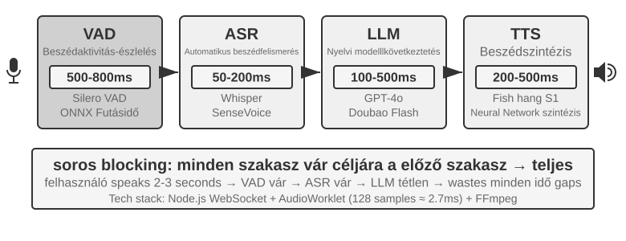
A korai hangasszisztensek egyszerű okból alkalmazták ezt a négyfokozatú soros csővezetéket: egyetlen modell sem tudta egyszerre kezelni a beszédfelismerést, a nyelvi megértést, a gondolkodást és a beszédszintézist. A moduláris architektúra lehetővé tette, hogy az egyes komponenseket egymástól függetlenül fejlesszék és optimalizálják. A modularitás ára azonban a felhalmozott késleltetés — minden szakasznak meg kell várnia az előző befejezését, mielőtt elindulhat.
"VAD": A csővezeték elején helyezkedik el, és folyamatosan figyeli a hangfolyamot. Kulcsfontosságú tervezési döntése a beszéd végének érzékelése: a rendszerek jellemzően 500-800 ms folyamatos csendküszöböt használnak. Ha a felhasználó több mint fél másodpercre abbahagyja a beszédet, a VAD befejezettnek tekinti a megszólalást. Ez bevezeti a késleltetés első forrását, és nehéz kompromisszumra kényszerít: ha a küszöb túl rövid, egy gondolkodási szünet összetéveszthető a megszólalás végével, ami a mondat idő előtti levágásához vezet; ha túl hosszú, a felhasználónak majdnem egy másodpercet kell várnia a befejezés után, mielőtt választ kap.
"ASR": A hanghullámformát szöveggé alakítja. Az olyan modellek, mint a Whisper és a SenseVoice, amikor 5 másodperc hangot egy GPU-n telepített kis vagy közepes méretű modellel dolgoznak fel, jellemzően 50-200 ms-ot igényelnek; nagyobb modellek vagy erőforrás-korlátozott telepítések esetén ez 200-500 ms is lehet (a 9-3. kísérlet kontrollcsoportja ebbe a kategóriába esik). A kritikusabb probléma: a VAD várakozás és az ASR átírás teljes ideje alatt a downstream LLM teljesen tétlen — nem kapott semmit, és nem kezdhet el korán gondolkodni.
"LLM": Inferencia, még jól optimalizálva is, gyakran 100-500 ms első tokenidőt (TTFT) produkál a kontextushossztól függően; az első beszédre alkalmas rövid szegmens dekódolása további időt vesz igénybe. Ha az érvelés engedélyezve van, a modell jellemzően befejezi a belső gondolkodást, mielőtt kiadná az első látható tokent, ami 5-10 másodpercre növelheti a várakozást. Egy hagyományos teljesen soros implementáció szintén megvárja, amíg az LLM befejezi a teljes választ, mielőtt átadná a szöveget a TTS-nek.
"TTS": A válaszszöveget beszéddé alakítja; egy rövid szegmens szintézise jellemzően 200-500 ms-ot vesz igénybe. A 9-2. ábra egy rövid, érvelés nélküli válaszon szemlélteti a soros késleltetés felhalmozódását: VAD (500-800 ms) + ASR (50-200 ms) + LLM TTFT (100-500 ms) + LLM rövid szegmens generálása (100-300 ms) + TTS (200-500 ms), összesen körülbelül 0,95-2,3 másodperc. Ez csak egy szemléltető tartomány konzisztens mérési konvenció mellett; a tényleges késleltetés függ a bemenet és a válasz hosszától, a modelltől, a hardvertől, a hálózattól és a terheléstől is.
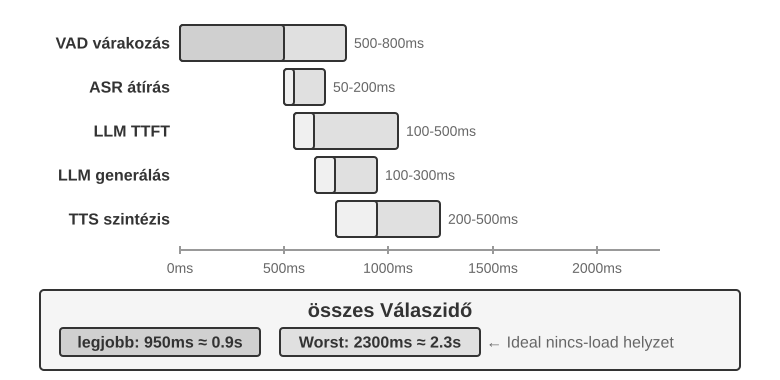
Gyártási környezetben a sorbanállási késleltetés (queuing latency) tovább ront a helyzeten. Ez úgy működik, mint egy étteremben: minél forgalmasabb a konyha, annál hosszabb a várakozás — és a várakozás nem lineárisan nő, hanem az egekbe szökik (9-3. ábra). Amikor egy kérés sor nélkül érkezik, a feldolgozási ideje a sor nélküli, vagy üresjárati késleltetés. De amikor több kérés érkezik egyszerre, a későn érkezőknek sorba kell állniuk.
Intuitívan, minél magasabb a kihasználtság, annál meredekebben — és nemlineárisan — nő a várakozási idő. A sorbanálláselmélet megadja a közelítő összefüggést (itt intuíció céljára, nincs szükség szigorú levezetésre): Teljes Késleltetés ≈ Üresjárati Késleltetés × 1/(1-Kihasználtság). A kihasználtság a szerver foglaltságának arányát jelenti; például 50%-os kihasználtság azt jelenti, hogy a szerver az idő felében dolgoz fel kéréseket, fele időben tétlen. 50%-os kihasználtságnál a késleltetés megduplázódik; 80%-nál ötszöröse az üresjárati késleltetésnek — ezért nem futhatnak a szerverek huzamosabb ideig magas terhelés alatt.
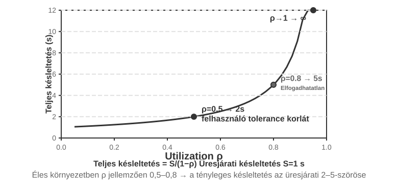
"9-1. kísérlet ★: Hagyományos hangügynök építése"
Ez a kísérlet egy teljes valós idejű hangalapú párbeszédrendszert épít, amely lehetővé teszi a felhasználók számára, hogy mikrofonon keresztül hanggal kommunikáljanak egy MI-val. A rendszer front-end/back-end szétválasztott architektúrát használ, valós idejű kommunikációval WebSocketen keresztül.
A magfolyamat szigorú soros mintát követ: a front-end rögzíti a mikrofonbemenetet, és valós időben elküldi a back-end-nek WebSocketen keresztül. A back-end egy Silero VAD modellt futtat a beszédtevékenység érzékelésére, amely nagyobb pontosságot és jobb zajállóságot kínál a hagyományos hangerő-alapú detektálási módszerekhez képest. Körülbelül 500 ms folyamatos csend érzékelése után a hangszeletet kinyerik a további feldolgozáshoz.
Az ASR, LLM és TTS szakaszok mindegyike támogatja a rugalmas váltást több szolgáltató között, lehetővé téve a fejlesztők számára, hogy a késleltetés, pontosság és regionális hálózati körülmények alapján válasszák ki az optimális kombinációt.
9-2. kísérlet ★: Telefonügynök építése a PineClaw Voice API használatával
A 9-1. kísérlet egy böngészőn belüli hangalapú párbeszédrendszert épített, de sok valós ügynökfeladat tényleges telefonhívásokat igényel — ügyfélszolgálat felhívása számlák egyeztetéséhez, étterem foglalása, rendelések megerősítése. A 4. fejezet a PineClaw Channel mechanizmusán keresztül bemutatta, hogyan csökkentheti egy eseményvezérelt architektúra a telefonos értesítések válaszidejét percről másodpercre. Ez a kísérlet magának a hanghívásnak a felépítésére összpontosít. A PineClaw Voice API (a szerzői csapat által fejlesztett) példáján keresztül az ilyen gyártási minőségű telefonos hang API-k jellemzően a tárcsázás, IVR navigáció (azaz "Érdeklődés esetén nyomja meg az 1-et; a kezelőért nyomja meg a 0-t" telefonmenük), beszélgetés és átírás teljes folyamatát magukba foglalják: az ügynök megadja a telefonszámot, a célt és a kontextusinformációkat, és a hangügynök befejezi a teljes hívást, visszaadva egy strukturált hívásrekordot.
"Kísérlet célja": Olyan ügynök építése, amely valós telefonhívásokon keresztül képes feladatokat végrehajtani, integrálva a PineClaw Voice-t eszközként a ReAct ciklusba.
"Technikai megközelítés": A PineClaw Voice Python SDK (
pine-voice) használatával az ügynököt egymake_phone_calleszközzel ruházzuk fel. Az ügynök megkapja a felhasználó feladatleírását (pl. "Segíts lefoglalni egy fogászati ellenőrzést holnap délután 3-ra"), és ReAct érvelést használva meghatározza: (1) melyik telefonszámot hívja; (2) a hívás célját és kulcsinformációit; valamint (3) hogyan jelentse az eredményeket a felhasználónak a hívás befejezése után.Az ügynök munkafolyamata: A felhasználó azt mondja: "Hívd fel a rendelőt, hogy időpontot foglaljak holnapra" → Az ügynök átgondolja, milyen információkra van szükség (rendelő telefonszáma, időpont, beteg neve) → Ha az információ nem elegendő, pontosítást kér a felhasználótól → Meghívja a
make_phone_calleszközt → A PineClaw tárcsázza a számot, beszél a másik féllel, és befejezi a foglalást → Az ügynök megkapja a hívás összefoglalóját és átiratát → Jelenti az eredményt a felhasználónak."Elfogadási kritériumok": Sikeresen lebonyolítani egy teszt-hívást (először saját telefonját hívhatja a kapcsolat ellenőrzéséhez). Az ügynök képes önállóan meghatározni a hívási paramétereket a feladatleírás alapján. A hívás befejezése után helyesen kinyeri a kulcsinformációkat (időpont, visszaigazolási szám stb.) és jelenti a felhasználónak. Hasonlítsa össze a különbséget az API közvetlen használata és az ügynök ReAct ciklusán keresztül történő használata között — az utóbbi képes kezelni a hiányos információjú helyzeteket (pl. telefonszám keresése, ha a felhasználó nem adta meg).
Ez a kísérlet a hangügynökök egy fontos alkalmazási irányát mutatja be: az ügynökök nemcsak hangalapú beszélgetést folytathatnak a felhasználókkal, hanem a felhasználó nevében telefonhívásokon keresztül is kapcsolatba léphetnek a külvilággal. A PineClaw hangügynökét kifejezetten órákig tartó várakozások, telefonmenükben való navigáció és bonyolult tárgyalások kezelésére képezték — képzelje el, hogy egy MI felhívja Ön helyett a szolgáltató ügyfélszolgálatát, és várakozik egy élő ügyintézőre. Pontosan ezek azok a forgatókönyvek, ahol a hagyományos soros hangcsővezetékek nehézségekkel küzdenek.
A kaszkádolt csővezeték teljes láncú streamelése¶
A 9-2. ábra egy "teljesen soros" forgatókönyvet feltételez, amelyben minden szakasz befejeződik, mielőtt átadná a stafétát. A gyártási rendszerek általában megőrzik a moduláris VAD-ASR-LLM-TTS felosztást, miközben minden szakaszt arra késztetnek, hogy a lehető legkorábban bocsássa ki a növekményes eredményeket, lerövidítve az időt, amíg a felhasználó meghallja az első szótagot:
- "ASR átírás hallgatás közben": A streaming felismerés folyamatosan bocsát ki ideiglenes átiratokat, amíg a felhasználó beszél, elrejtve a legtöbb felismerési számítást a felhasználó beszéde mögé. A végső szöveget még a forduló vége után is meg kell erősíteni, mert a későbbi kontextus módosíthatja az ideiglenes átiratot.
- Az LLM streameli a kimenetet és szegmentálja a szöveget: Ahogy a modell generál, a választ központozás vagy szemantika alapján beszédkész darabokra bontja, és az első darabot elküldi a TTS-nek anélkül, hogy megvárná a teljes választ. Ez nem rövidíti le az LLM TTFT-jét, és nem hagyja ki az érvelést; csupán eltávolítja a várakozást a válasz többi részének befejezésére.
- "A TTS növekményesen szintetizál hangot": A TTS akkor indul, amikor megkapja az első szövegdarabot, és hangdarabokat ad vissza, mielőtt a teljes hullámforma elkészülne. Az LLM ezután generálhatja a maradék szöveget, miközben a TTS a következő beszédszakaszokat szintetizálja, és a kliens lejátssza a már megkapott hangot.
Azonban az, hogy minden szakasz streamel, nem jelenti azt, hogy mindhárom modell egyszerre kezd el dolgozni ugyanazon a fordulón. Egy szabványos, nem spekulatív kaszkádban a függőségek megmaradnak: az ASR dolgozhat, amíg a felhasználó beszél; az LLM csak a forduló vége és az átirat stabilizálódása után generálja a végső választ; a TTS csak azután indul, hogy az LLM kiadta az első beszédkész darabot. A tényleges átfedések a felhasználói beszéd és az ASR átírás között, valamint az LLM válasz többi részének generálása és a TTS szintézis/lejátszás között vannak — nem pedig teljes párhuzamosság az ASR, LLM és TTS között az elejétől a végéig.
Az agresszívebb rendszerek "preemptív/spekulatív generálást" használnak: elindítják az LLM-et egy kellően stabil részleges átiratból, majd törlik, újraindítják vagy korrigálják a generálást, ha a későbbi átirat megváltozik. A hangot is szintetizálhatják korán, de általában megvárják a forduló megerősítését a lejátszás előtt, hogy az ügynök ne beszéljen bele egy olyan felhasználóba, aki még nem fejezte be. Az olyan keretrendszerek, mint a LiveKit Agents és a Pipecat, támogatják mind a szokásos streaming kaszkádokat, mind ezeket a preemptív stratégiákat. Az, hogy az ASR és az LLM valóban átfedi-e egymást, a részleges átirat-kötelezettségvállalás, érvénytelenítés és visszagörgetés explicit implementálásától függ; ez nem automatikus következménye egy stream opció engedélyezésének.
A szokásos streaming szintén nem képes kiküszöbölni a VAD csendvárakozását és magát a forduló ítéletet. A streaming ASR már fut a várakozás alatt; amit a fordulódetektálás blokkol, az a végső átirat közzététele és a válasz lejátszása. A preemptív generálás elrejtheti ennek a számításnak egy részét, de a rendszernek továbbra is el kell döntenie, hogy mikor biztonságos megszólalni. Ennek a késleltetésnek a további csökkentése az előtételezés és a végponti döntéshozatal javítását igényli.
Streaming hangérzékelés: VAD + ASR lecserélése¶
Ez az érzékelési előtét két szakaszból áll: a VAD meghatározza, hogy a felhasználó befejezte-e a beszédet, az ASR pedig szöveggé alakítja a hangot. Egy teljesen soros architektúrában együtt határozzák meg, hogy a downstream csővezeték mikor indul, és milyen bemenetet kap. Egy streaming architektúrában az ASR korábban kezdődik, de a végső szöveg közzététele és a válaszadás időzítése továbbra is a végpont érzékelés korlátai közé esik. A hagyományos VAD + ASR kaszkádnak három alapvető problémája van:
- "Késleltetés felhalmozódása": A VAD-nak 500-800 ms csendet kell várnia, hogy megerősítse a felhasználó befejezését, mert nem képes előre jelezni a jövőt, és csak a "várakozásra" támaszkodhat, hogy megkülönböztesse a "tényleg befejezte" és a "csak gondolkodási szünetet tart" eseteket.
- "Információvesztés": A VAD csak bináris jelet ad ki, például "hang/csend". Az összes akusztikai részlet — érzelemváltozások, hangszín-eltolódások, tétova szünetek és háttérzaj — elveszik. A hibák különösen gyakoriak komplex környezetben: egy kicsit hosszabb szünet összetéveszthető a megszólalás végével, levágva a mondatot; a háttérzaj hamis indítást válthat ki, ami miatt a rendszer akkor is feldolgoz hangot, amikor senki sem beszél; és a rendszer nem biztos, hogy meg tudja különböztetni, hogy a felhasználó "aha" hangja megszakítás-e vagy visszajelzés.
- "Csökkent pontosság": A VAD a folyamatos hangot független szegmensekre vágja, amelyeket egyenként küld az ASR-nek felismerésre, megszakítva a kontextuális folytonosságot. A felismerési hibák jelentősen megnőnek olyan tartalmaknál, amelyek kontextust igényelnek, mint e-mail címek, márkanevek, személynevek és más tulajdonnevek. Például, ha egy felhasználó azt mondja, hogy "john dot smith at gmail dot com", és a "john" és a "smith" különböző szegmensekbe kerül, a "smith" kontextus hiányában félreismerhető "miss"-ként.
"A streaming hangérzékelési modellek" alapvető megoldást kínálnak. Először is tisztázzuk, mit jelent technikailag a "streaming": az, hogy egy hangmodell képes-e streamelni, attól függ, hogy a "kódolója kauzális vagy darabolt-e" (csak a már megérkezett hangra támaszkodik, soha nincs szüksége a teljes felvételre), és hogy a "dekódolása növekményes-e" (részeredményeket bocsát ki minden egyes kis hangdarab érkezésekor). A Whisper nem képes streamelni — nem a dekódolása miatt, amely amúgy is autoregresszív, hanem mert a kódolójának szüksége van egy teljes hangszegmensre (rögzített 30 másodperc, rövidebb esetén kitöltve), mielőtt elindulhat. Vegyük észre azt is, hogy a streaming felismerés önmagában nem új: a hagyományos streaming ASR-t, amelyet az RNN-T és a streaming Conformer képvisel, már régóta ipari méretekben telepítik — a telefonok élő feliratai és a billentyűzetalkalmazások hangdiktálása pontosan ilyen modelleket használ —, és ennek semmi köze az LLM-ekhez.
Ez a szakasz egy új útra összpontosít: "LLM-alapú streaming hallási érzékelés" — egy nyílt forráskódú LLM törzs utótanítása, hogy közvetlenül egy folyamatos hangfolyamból állítson elő szemantikai válaszokat, ezzel egyesítve a "felismerést" és a "megértést" egyetlen modellben. Ez a hagyományos streaming ASR fejlesztése, nem a streaming technológia feltalálása: a növekményes felismerés késleltetése továbbra is egyetlen inferencia-lépés idejének nagyságrendjében van (tízestől pár száz milliszekundumig), de a modell már nem VAD által levágott elszigetelt töredékeket lát. Ehelyett a beszélgetés kezdetétől az aktuális pillanatig tartó folyamatos hangfolyamot látja, lehetővé téve a teljes kontextuson alapuló In-Context Learninget, és jelentősen javítva a személyes adatok, technikai kifejezések és egyéni kiejtési minták felismerési pontosságát.
Egy másik kulcsfontosságú előny, hogy ez az út örökli az LLM-ek világismeretét és józan ész érvelési képességeit — elvégre a törzsmodell hatalmas mennyiségű szöveget látott. Például a modell tudja, hogy az "Apple" után "event" szóval valószínűleg a vállalatra utal, nem a gyümölcsre. Ez a tudásnövelés a felismerési pontosságot olyan nagy értékű információk esetében, mint az összegek, helynevek és márkanevek, messze a hagyományos ASR fölé emeli. Ez az út már rendelkezik telepíthető modellekkel, mint a Fixie Ultravox, amely közvetlenül táplál hangot egy LLM törzsbe, és szöveges és szemantikai tokeneket ad ki. Az ebben a szakaszban használt kísérletek Qwen2-Audio-ja és az Alibaba Qwen2.5-Omni-je is ebbe az audio-natív modellek kategóriájába tartozik.
A VAD cseréje azonban nem feltétlenül igényel teljes méretű audio LLM használatát. Ha a cél csak az első probléma megoldása — annak meghatározása, hogy a felhasználó befejezte-e a beszédet —, van egy könnyebb út: ennek a "fordulóítéletnek" a beágyazása közvetlenül a felismerőbe2. A megközelítés: adjunk egy LoRA adaptert egy kis nyílt forráskódú streaming-felismerő modellhez, hogy az átírás közben a szemantikát és a csendet együttesen mérlegelve ítélje meg, hogy a mondat teljes gondolatot fejezett-e ki — ez azért szükséges, mert a fordulón belüli szünetek (egy telefonszám felmondása közbeni megtorpanás) gyakran hosszabbak, mint a fordulók közötti hézagok, így a csendküszöb önmagában mindkét irányban csődöt mond. Az érdekesebb megállapítás: amikor a modell folyamatosan ingadozik, hogy átvegye-e a fordulót, a kiváltó ok általában nem az architektúra, hanem "utólagos tudással annotált képzési címkék" — az annotátorok olyan hangot használtak, amely a döntési pont után jelent meg, és amelyet az online modell soha nem láthat. Ha minden címkét újraannotálunk, csak a döntési pillanatban elérhető információt használva, a hamis ingadozás eltűnik. Ez visszaköszön a 7. fejezetből az utótanításról: gyakran az adat kritikusabb, mint az architektúra. Ennek a könnyebb útnak is vannak gyártási szintű implementációi: a Deepgram Flux és az AssemblyAI Universal-Streaming közvetlenül a streaming felismerő modellekbe ágyazza a végpont- és fordulódetektálást, kifejezetten hangügynökök számára tervezve; a nyílt forráskódú oldalon a LiveKit és a Pipecat szemantikus fordulódetektáló modelleket biztosít.
A modell nemcsak szöveget ad ki, hanem egy sor "speciális markert akusztikai eseményekhez" — ezek a modell tanítása során bevezetett dedikált tokenek. A modell megtanulja automatikusan kiadni őket a megfelelő akusztikai események érzékelésekor. Gyakori típusok:
<speak_start/end>: A beszéd kezdetének és végének jelölése a szemantika és az akusztika átfogó megítélése alapján, nem egyszerű csenddetektálás alapján.<interrupt>: Megkülönbözteti, hogy a felhasználó valóban meg akar-e szakítani, vagy csak visszajelez, vagy háttérzaj hatása alatt áll.<emotion:happy/frustrated>: Érzelemjelzők.<laugh>/<sigh>: Paranyelvi jelek, mint a nevetés és a sóhaj.<music>/<noise>: Környezeti hangok.
Ezek a markerek a szöveges tokenekkel együtt egységes eseményfolyamot alkotnak, amely a gondolkodási rétegbe kerül.
Bemeneti hang: "Ööö, tulajdonképpen azt hiszem... nem, várj, hadd gondoljam át újra."
Modell kimeneti folyam:
<speak_start> Ööö, <emotion:hesitant> tulajdonképpen azt hiszem...
<silence:500ms> nem, várj, <emotion:confident> hadd gondoljam át újra <speak_end>
Vegyük észre, hogy a modell nemcsak szöveges átiratot ad ki, hanem hangesemény-markereket is (beszéd kezdete/vége, érzelemváltozások, csendes intervallumok). Az ügynök-keretrendszerek kihasználhatják ezeket a markereket természetesebb interakciókhoz — például proaktívan opciókat kínálva, ha a felhasználó tétovázását érzékelik.
9-3. kísérlet ★: Streaming hangérzékelés szimulálása Qwen2-Audio-val
Először is egy figyelmeztetés a kísérleti tervről: a Qwen2-Audio maga egy nem-streaming modell, amely teljes szegmenseket vesz bemenetként. Ez a kísérlet darabolt bemenetet használ a streaming feldolgozás szimulálására — a folyamatos hangfolyamot kis, rögzített hosszúságú darabokra vágja, és minden egyes darabot elküld a modellnek a felhalmozott hangkontextussal együtt. A modell fokozatosan generál szöveges és akusztikus eseménytokeneket (például nevetés, szünetek és egyéb nem verbális jelek), miközben a kísérlet méri a késleltetést az egyes darabok elküldésétől a szöveg megérkezéséig. Ennek a megközelítésnek van egy fontos költsége: a Qwen2-Audio kódolója nem növekményes. Minden alkalommal, amikor a modell egy új darabot dolgoz fel, az összes korábban felhalmozott hangot a nulláról kell újrakódolnia. Ahogy a beszélgetés hosszabbodik, úgy nő az egyes darabok kódolási késleltetése is. Ez a lényegi különbség a "szimulált streaming" és a "valódi streaming" között, amely növekményes vagy kauzális kódolókat használ, hogy csak az újonnan érkezett hangot dolgozza fel. A terv demonstrálja a teljes kontextusú folyamatos érzékelés pontossági előnyeit, de a késleltetési számok csak a darabméretet és az inferencia sebességet tükrözik, nem a valódi streamingre tervezett modell, például a Qwen3-Omni darabolt kódolással rendelkező első csomag késleltetését. Az érdeklődő olvasók megismételhetik a kísérletet egy ilyen modellel. Az alapvonal egy hagyományos VAD + Whisper ASR csővezeték. A kísérlet három forgatókönyvet fed le: normál beszélgetés, hosszú mondatok szünetekkel, és beszélgetés háttérzajjal.
Eredmények: A darabolt szimulációs séma növekményes felismerési késleltetése szabályozható egy-két száz milliszekundum nagyságrendben (a darab hosszától és a hardvertől függően), míg a hagyományos séma megköveteli a VAD megerősítésének (600 ms) plusz a Whisper inferencia (kb. 200-500 ms a kísérlet konfigurációja szerint) kivárását, összesen 800-1100 ms-ot. A szünetekkel rendelkező forgatókönyvben a VAD az első hosszú szünetet a beszéd végeként értelmezte, két szegmensre vágva a mondatot a különálló felismeréshez. A "大概两点左右" ("két óra körül") félreismerésre került "大概零点左右" ("éjfél körül") formában — a környező kontextustól megfosztva a hasonló hangzású 两 (liǎng, "kettő") 零 (líng, "nulla")-ként hallatszott. A darabolt séma, megtartva a teljes kontextust, helyesen ismerte fel az egész mondatot. A háttérzaj forgatókönyvben a Qwen2-Audio
<|noise|>tokeneket ad ki a zaj jelenlétének jelzésére anélkül, hogy megszakítaná a felismerést, míg a hagyományos VAD-ot hamisan kiváltotta a zaj, ami a felismerési folyamat idő előtti elindulásához vezetett.
Paradigma 2: Végponttól végpontig tartó omnimodális modellek (Omni)¶
Nézzünk vissza a kaszkádolt csővezeték egészére: még ha az érzékelési előtétet streaming hangérzékelésre frissítjük is, a hallgatást, gondolkodást és beszédet továbbra is három független modell között osztja szét, amelyeket diszkrét interfész köt össze. Bármilyen szélesre is nő ez az interfész, csak egy marék szemantikus tokent és alkalmanként egy akusztikus markert hordoz; a beszélő érzelme, hangszíne, intonációja, valamint a környezeti háttérhangok vagy zene nagyrészt elvesznek az átadás során. És mivel a három részt külön-külön tanítják és hangolják, nehezen működnek együtt. A végponttól végpontig tartó omnimodális modellek (Omni) más utat választanak — egyetlen modell közvetlenül "hallgatja" a hangot, "kigondolja" a választ, és "kimondja", egyesítve a három részt egyben (9-4. ábra). Elegendő tanítási adattal a modell belső latens tere közvetlenül továbbíthatja ezeket a paranyelvi jeleket a generálási oldalra, csökkentve a késleltetést, miközben olyan módon őrzi meg a prozódiát és az érzelmet, ahogy a szöveg önmagában nem képes. A kompromisszum: a "kaszkádolt csővezetékek" tiszta modulokkal, szegmensenkénti hangolással és jó interpretálhatósággal rendelkeznek; a "végponttól végpontig tartó modellek" alacsonyabb késleltetést és nem szöveges hűséget vásárolnak a nagyobb tanítási adatigény és a gyengébb interpretálhatóság árán.
Egy dimenziót rendszeresen figyelmen kívül hagynak: a végponttól végpontig tartó modellek fő előnye a "késleltetés"; nem feltétlenül nyernek a "pontosságban". A tanulságos összehasonlítás az "önkaszkád" — ugyanaz a modell először szöveggé alakítja a hangot, majd e szöveg felett végez érvelést. Az, hogy az önkaszkád vagy egyetlen végponttól végpontig tartó menet pontosabb-e, a feladattól függ, és a minta világos: amikor a választ főként a szemantikus tartalom ("mit mondtak") határozza meg, és a köztes szöveg képes hordozni a feladat szempontjából releváns információt, az önkaszkád felveszi a versenyt a végpontival, sőt meg is veri — különösen a gyengébb érzékelésű modellek esetében. Amikor a válasz olyan nem verbális jelzésektől függ, amelyeket a szöveg nehezen képvisel (hangszín, érzelem, környezeti hangok), a végponti megoldás egyértelműen jobb. Még fontosabb, hogy az, hogy melyik oldal nyer, "előre megjósolható a feladat természetéből", nem pedig a "a végponti megoldás fejlettebb" magyarázatra bízható. Ebből egy tervezési elv következik: a teljesítményt általában nem az határozza meg, hogy létezik-e köztes reprezentáció — egy "szűk keresztmetszet" —, hanem az, hogy milyen információt hordoz az a szűk keresztmetszet. Ha a köztes szöveget puszta átiratról paranyelvi markerekkel ellátott strukturált reprezentációra fejlesztjük (érzelem, beszédtempó, környezeti hangok), a végponti modellek pontossági előnye gyakran csökken. Ez ugyanaz az állítás, ami korábban a "Streaming hangérzékelés"-ben elhangzott: az érzékelési rétegnek nem szabad puszta szöveges átiratot kiadnia3.
Bármilyen erős is az Omni, csupán három modellt egyesített egybe, anélkül, hogy elvetette volna a "társalgási fordulók" feltételezését: továbbra is a VAD-ra támaszkodik a beszélői jog kiosztásában — elhallgat, amint érzékeli, hogy a felhasználó beszél, és elindul, amint a felhasználó elhallgat. Így a megszokott hiba újra felbukkan: a felhasználó felsorol egy számsort, megtorpan egy pillanatra, és az Omni úgy dönt, hogy befejezte, és közbevág. A korábban leírt streaming hangérzékelés a fordulóítéletet a csend időtartamáról a szemantikus szintre emeli, és nagyban csökkenti az ilyen téves indításokat — de ez még mindig egy lokális javítás a társalgási fordulók keretrendszerén belül, nem magának a társalgási fordulóknak a vége. Hogy "végleg" kiszabaduljunk, abba kell hagynunk a keretrendszeren belüli javítgatást: hagyjuk, hogy a modell egyszerre hallgasson és beszéljen, és maga döntse el, mikor szólaljon meg, merev "kié a szó" kapcsoló nélkül.
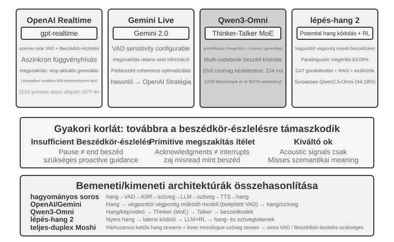
Modellszinten az "OpenAI Realtime API" közel áll a végponti megoldáshoz, mert a modell natívan dolgozza fel a hangot. Az interakció-vezérlés szintjén azonban továbbra is hagyományos VAD-ra támaszkodik, így egy köztes lépés a teljesen végponti rendszer felé. A 2024-es előzetes verzió eredetileg GPT-4o-n futott; amikor az API 2025-ben általánosan elérhetővé vált, átváltott "gpt-realtime"-re, egy dedikált, valós idejű hangra optimalizált modellre, nem a GPT-4o egy módjára. Az API alapértelmezés szerint engedélyezi a szerveroldali VAD-ot, és automatikusan meghatározza, hogy a felhasználó mikor kezdi és fejezi be a beszédet. Támogatja a megszakításokat is: amikor a felhasználó beszélni kezd, az API azonnal leállítja az aktuális hanggenerálást, ahogy az ember természetesen elhallgat, ha félbeszakítják egy személyes beszélgetésben. A gpt-realtime aszinkron függvényhívásokat is bevezet, lehetővé téve a modell számára, hogy tovább beszéljen, amíg az eszközeredményekre vár, ezzel elrejtve az eszköz késleltetését a beszélgetésen belül. Ezek a fejlesztések javítják az élményt, de a VAD keretrendszeren belüli optimalizálások maradnak. A "Gemini Live API" hasonló megközelítést alkalmaz, konfigurálható VAD érzékenységgel, és megszakítás után is megőrzi a már elküldött információkat a beszélgetési koherencia fenntartása érdekében.
A "Qwen3-Omni" egy Thinker-Talker architektúrát alkalmaz: a gondolkodás (megértés és érvelés) és a kifejezés (hanggenerálás) két specializált modulra bontását, egyesítve a szöveg, kép, hang és videó érzékelését és generálását.
A képesség magas szinten tartása mellett a számítási költség szabályozása érdekében a Qwen3-Omni az MoE (Mixture of Experts) architektúrát alkalmazza — gondoljunk rá úgy, mint "szakértői csapatok igény szerinti hívására": több kis szakértői hálózatot tartalmaz, és minden inferencia során csak a aktuális feladathoz leginkább releváns néhány aktiválódik, a többi nem vesz részt a számításban. Például beszéd feldolgozásakor főként a beszédhez kapcsolódó szakértők aktiválódnak; képek feldolgozásakor főként a látáshoz kapcsolódó szakértők. Ez lehetővé teszi, hogy a modell nagyon nagy teljes paraméterszámmal rendelkezzen (biztosítva a magas képességet), miközben a tényleges számítás tokenenként nagyon kicsi marad, ezáltal javítva az inferencia áteresztőképességet és csökkentve a sorbanállási késleltetést nagy terhelés alatt.
Egy fontos megkülönböztetés: az MoE javítja az áteresztőképességet — hogy hány kérést tud kiszolgálni egy számítási egység. Nem határozza meg közvetlenül, hogy milyen gyorsan bocsátható ki az első hangcsomag; az első csomag késleltetése a generálási architektúrától függ. A Qwen3-Omni alacsony első csomag késleltetése a Talker moduljának köszönhető: többkódkönyvű autoregresszióval növekményesen generál hangtokeneket, miközben egy kauzális kodek növekményesen dekódolja ezeket a tokeneket hullámformává. Amint a gondolkodási modul szöveget produkál, a Talker elkezdheti streamelni a beszédet anélkül, hogy megvárná a teljes választ. A hivatalos jelentés szerint az elméleti hidegindítási első csomag késleltetése körülbelül 234 ms. Támogatja a megértést 19 nyelven és a generálást 10 nyelven, és 22-ben vezet a 36 audio-video benchmarkból.
A "Step-Audio 2" más utat választ: közvetlenül dolgozza fel a nyers hangbemenetet, és szöveges és hang kimenetet is ad, elérve a valódi végponttól végpontig tartó hangalapú beszélgetést. Nemcsak azt képes megérteni, hogy mit mondtak (szemantikus információ), hanem azt is érzékeli, hogy hogyan mondták — paranyelvi információ, például hogy a beszélő érzelme boldog vagy mérges-e, a beszédtempó gyors vagy tétova-e, az intonáció emelkedik vagy süllyed-e — valamint háttér-környezeti hangokat és zenét. Gondolkodáson és megerősítéses tanuláson keresztül generál kifejező válaszokat, és integrál egy RAG mechanizmust és külső eszközöket is (webes keresés, hangkeresés). A Step-Audio 2 tanulmány szerint az általuk javasolt StepEval-Audio-Paralinguistic benchmarkon a paranyelvi megértésben a Step-Audio 2 83,09%-os pontosságot ért el, messze megelőzve a kortárs nyílt forráskódú omnimodális modellt, a Qwen2.5-Omni-t (44,18%), és felülmúlva a GPT-4o Audio-t (43,45%) és a Kimi-Audio-t (49,64%) is.
A Step-Audio R1 a Step-Audio sorozat következő modellje. A Step-Audio 2 végponttól végpontig tartó hangalapú beszélgetési architektúrájára építve tovább internalizálja a gondolkodási képességeket közvetlenül a hangmodellbe. A kettő egy progresszív evolúciót képvisel ugyanazon a technikai úton.
Paradigma 3: Teljes duplex / Interaktív modellek¶
A Paradigma 2 három modellt egyesített egybe, de továbbra is ragaszkodott a társalgási fordulók feltételezéséhez — vagy a felhasználó beszél, vagy a modell beszél, a váltási pontot a VAD vagy a szemantika találgatja. Néhány forgatókönyvben egyszerűen nincs hely a "te mondatod, aztán az enyém" számára. A "szimultán tolmácsolás" a klasszikus eset: a tolmács nem vár a teljes mondat befejeződésére, hanem egyszerre hallgat és fogalmaz, minden jelentésegységet lefordít, amint nagyjából kész — a hallgatás és a fordítás mindig átfedi egymást. A "ritmusjátékok, ahol dobolsz a zenére", még extrémebbek: a fülnek egy megszakítás nélküli zenei folyamot kell követnie, a kéznek azonnal el kell találnia minden ütemet, és az elmének előre kell jeleznie a következőt — itt nincs olyan, hogy "forduló", csak egy véget nem érő bemeneti folyam. Az ilyen feladatok gyökerében támadják meg a fordulóalapú modellt: megkövetelik, hogy a hallgatás, gondolkodás és cselekvés egyidejűleg történjen, miközben a fordulóalapú modell teljes előfeltétele az, hogy a hármat külön időrésekbe sorolja. A teljes duplex modell a "VAD kiiktatása" utat logikus végpontjába viszi — egyszerűen elveti a társalgási fordulók feltételezését, és hagyja, hogy a modell "folyamatosan, egyszerre hallgasson és beszéljen".
A úttörő kutatási munka itt a Kyutai "Moshi" (2024). Két hangfolyamot modellez párhuzamosan (a felhasználó hangját és a modell saját hangját), kiegészítve egy "belső monológ" szövegfolyammal a generált beszéd nyelvi minőségének javítása érdekében. Mivel mindig hallgat, az átfedő beszéd és a megszakítások természetes viselkedéssé válnak, nem igényelnek explicit megszakításdetektálási logikát. A végponttól végpontig tartó késleltetés körülbelül 200 ms, megközelítve az emberi beszélgetés természetes ritmusát.
2026-ban a "Thinking Machines Lab", amelyet Mira Murati alapított, bemutatott egy új kategóriát, amelyet "Interakciós Modellnek" neveztek4, és kifejezetten azzal érveltek, hogy az interaktivitás nem lehet külső hám, mint a modell köré tekert VAD, hanem magába a modellbe kell épülnie. Szavaikkal élve: "ahhoz, hogy az interaktivitás skálázódjon az intelligenciával, a modell részévé kell válnia." Architekturálisan ez "mikro-fordulókban" nyilvánul meg: ahelyett, hogy egy teljes forduló befejeződésére várna, a modell körülbelül 200 ms-os szegmensekben dolgozik — folyamatosan feldolgozva 200 ms bemenetet és generálva 200 ms kimenetet — lehetővé téve, hogy a hang-, video- és szövegfolyamok összefonódjanak és együtt haladjanak. Ez a szemcsézettség szándékos kompromisszum — elég finom ahhoz, hogy a csend, az átfedés és a megszakítás folyamatos folyamként maradjon meg a modell kontextusában, mesterséges fordulóhatárok nélkül; mégis elég durva ahhoz, hogy több modalitást párhuzamosan, darabokban dolgozzon fel, a késleltetést az érzékelhető valós idejű tartományon belül tartva. Mivel az interakció a modellen belül él, azok a viselkedések, amelyeket valaha specializált hámokból kellett összerakni — hallgatás beszéd közben, nézés közbeszólás közben — most egyszerűen a modell munkájának részét képezik, és erősödnek, ahogy a modell fejlődik. Az első modellt, a TML-Interaction-Small-t, mindhárom folyamon együtt tanították a nulláról; amikor észreveszi, hogy a felhasználó hibás kódot ír, vagy valaki belép a képkockába, képes kérés nélkül megszólalni.
A "lassú gondolkodáshoz" való hozzáállása is reprezentatív. Az interakciós modell maga csak a beszélgetés online tartásáért felelős. Amikor mély érvelést vagy eszközhívásokat igénylő problémával találkozik, átadja a feladatot egy erősebb érvelő modellnek a háttérben — amit átad, az nem egy elszigetelt lekérdezés, hanem a "teljes beszélgetési kontextus". Amíg a háttérmodell érvel, az eredmények növekményesen visszastreamelnek. Az interakciós modell ezután kiválaszt egy olyan pillanatot, amely nem szakítja félbe a felhasználót, hogy természetesen beleszője az eredményt a beszélgetésbe, miközben továbbra is válaszol, megválaszolja a követő kérdéseket, és megtartja a szót. Ily módon az "érvelő modell tervezési, eszköz és ügynök képességeit" nyújtja az "nem gondolkodó modell késleltetésével". A hivatalos jelentés szerint a TML-Interaction-Small (egy 276B paraméteres MoE 12B aktivált paraméterrel) körülbelül 0,40 másodperces váltási késleltetést ér el (a GPT-realtime-2.0 körülbelül 1,18 másodperc), és jelentősen felülmúlja a versenytársakat, amelyek a vizuális proaktivitás benchmarkjain közel nulla pontot érnek el; a cikk írásakor még kutatási előnézeti szakaszban van.
Ugyanebben az évben az OpenAI "GPT-Live" gyártási méretűvé tette a teljes duplexet, globálisan bevezetve a ChatGPT új alapértelmezett hangmodelljeként. Többé nem diszkrét üzenetváltások sorozataként kezeli a beszélgetést, hanem folyamatosan dolgozza fel a bemenetet, miközben folyamatosan generálja a kimenetet. Ezért másodpercenként több interakciós döntést tud hozni: hogy elkezdjen beszélni, tovább hallgasson, szünetet tartson, megszakítson vagy eszközt hívjon. Az eredmény: csendesen vár, amikor a felhasználó gondolkodik, ahelyett, hogy közbevágná, olyan visszajelzéseket használ, mint "mm-hmm" és "értem", hogy jelezze, hallgatja, és olyan feladatokra is képes, mint a valós idejű fordítás, amely egyszerre igényel hallgatást és beszédet.
A GPT-Live is ugyanazt a gyors és lassú folyamatok szétválasztásának útját követi — a "valós idejű interakció" és a "mély gondolkodás" szétválasztása: amikor keresést, érvelést vagy összetettebb ügynöki műveleteket igénylő feladattal találkozik, az interaktív GPT-Live átadja a feladatot egy frontvonalbeli modellnek a háttérben (induláskor GPT-5.5), miközben saját maga folytatja a beszélgetés folyását. Amint a háttérmodell produkál egy eredményt, a GPT-Live beépíti azt a beszélgetésbe. A GPT-Live-1 és a mini verzió a GPT-5.5 Instant-et használja a háttérben, míg a Medium és High szintek a gondolkodásra képes GPT-5.5-öt hívják, lehetővé téve a felhasználók számára, hogy szükség szerint válasszanak a "gyors" és a "mély" között. Ez a "gyors-lassú munkamegosztás" pontosan az a téma, amelyet a következő, "Kompromisszumok a gondolkodási architektúrákban" szakasz fog kibontani.
Áttekintve e fejezet "VAD lecserélése" narratív fonalát: a VAD csendküszöbök alapján találgatja a fordulóváltási pontot; a streaming érzékelés (lásd a korábbi "Streaming hangérzékelés" szakaszt a Paradigma 1-ben) a váltási ítéletet szemantikus szintre emeli; és a teljes duplex modell teljesen feloldja a "váltás" fogalmát — mindig hallgat, így a "megszakítás" többé nem egy különleges kezelést igénylő esemény, és a belevágás feldolgozási lánca architekturálisan nagyrészt megszűnik. Ez a "VAD lecserélése" narratív fonal végpontja a cikk írásakor.
Kompromisszumok a gondolkodási architektúrákban: A szétválasztástól az egyesítésig¶
A valódi kihívás a valós idejű válaszadás és a mély gondolkodás közötti feszültség: a felhasználók ezredmásodperces válaszokat várnak, míg a komplex problémák másodpercekig tartó gondolkodási időt igényelnek. Hogyan tud a modell elég mélyen gondolkodni, miközben alacsonyan tartja a késleltetést? Ez a feszültség nem egyedi a végponti architektúrákban; a kaszkádolt csővezetékek is szembesülnek vele.
Az alábbi három megoldás nem lineáris fejlődést képvisel. Különböző korlátokhoz tartozó tervezési kompromisszumok, és a gyakorlatban együtt élnek. A helyes választás az alkalmazás késleltetési követelményeitől és a szükséges érvelési mélységtől függ. A kulcsfontosságú különbség: az 1. és 2. megoldás két független modell között osztja meg a munkát, egy gyors és egy lassú között, amelyek párhuzamosan futnak. Nem igényelnek végponti architektúrát, sőt akár egy kaszkádolt csővezeték tetejére is rétegezhetők. Csak a 3. megoldás internalizálja valóban az érvelést a végponti modellen belül.
2026-ra a "gyors-lassú szétválasztás" útja a frontvonalbeli hangtermékek főáramú választásává vált, és saját nevet kapott. A Thinking Machines Lab "Interakciós Modelleknek" nevezi — egy valós idejű interakciós modell egy aszinkron háttér-érvelő modellhez kapcsolva; az xAI Grok Voice "Think Fast", a Pine AI hangügynöke és az előző szakasz GPT-Live "delegálása" mind ugyanazt a "gyors az előtérben a beszélgetés fenntartása, lassú a háttérben a mély érvelés" utat követik. A szétválasztás választásának, nem pedig "egyetlen mindenható modell tanításának" pragmatikus oka van: a frontvonalbeli érvelő modellek néhány havonta iterálnak, míg a valós idejű interakciós képességek speciális adatokat és tanítási célokat igényelnek. Mindkettőt ugyanabba a modellbe tömöríteni egy mozgó célpont üldözését jelenti, ami potenciálisan felhígítja a legértékesebb érvelési képességet5. Ezzel szemben a legerősebb érvelő modellt érintetlenül hagyva a háttérben, és csak egy könnyű interakciós modellt tanítva az előtérben, mindig használhatjuk az aktuális legerősebb "agyat" — pontosan ezért hangsúlyozza a GPT-Live a "fenntartható váltást a legújabb frontvonalbeli modellekre". Az alábbiakban a három megoldást vizsgáljuk az egyre erősebb koordinációs mechanizmusok sorrendjében.
1. megoldás: Gyors gondolkodás kitöltőkhöz, lassú gondolkodás válaszokhoz¶
A gyors és lassú gondolkodás párhuzamosan fut (9-5. ábra): a gyors gondolkodás 500 ms-on belül egy rövid tartózkodó választ produkál (ahogy az ember először azt mondja: "hadd gondolkozzam"), míg a lassú gondolkodás 5-10 másodpercet tölt a háttérben érveléssel, mielőtt leadná a teljes választ. A lassú gondolkodás mögötti technika a "tesztidő-skálázás" — leegyszerűsítve, hagyjuk, hogy a modell egy kicsit tovább gondolkodjon, mielőtt válaszol: ahelyett, hogy egy lépésben ugrana a válaszra, úgy működik, mint egy ember egy matekfeladaton — vázol egy megközelítést, lépésről lépésre levezet, ellenőrzi az eredményt — több számítást kereskedve jobb válaszért.
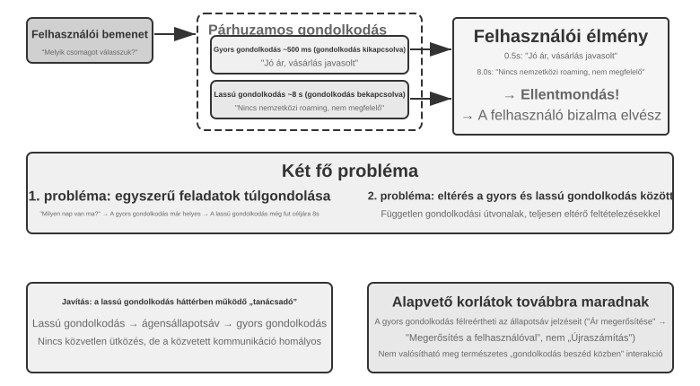
1. probléma: Túl gondolkodás egyszerű kérdéseken. A felhasználó megkérdezi: "Milyen nap van ma?" A gyors gondolkodás helyesen válaszol "Szerda" 500 ms-on belül, de a lassú gondolkodás továbbra is lefuttatja a teljes 10 másodperces gondolkodást, majd megismétli a "Szerdát". Ez nemcsak számítási erőforrásokat pazarol, hanem ami még kritikusabb, megzavarja a beszélgetés ritmusát — a felhasználónak már megvan a válasza, és készen áll a továbblépésre, amikor egy ismételt válasz szakítja félbe. 2. probléma: Következetlenség a gyors és lassú között. A kettő egymástól függetlenül fut párhuzamosan. Ugyanazt a kontextust látják, de az érvelési útjaik teljesen eltérhetnek — a gyors gondolkodás egy feltételezés alapján válaszol, a lassú gondolkodás felfedezi, hogy az a feltételezés hamis, és az ellenkező következtetésre jut. Másodperceken belül a felhasználó hallja, hogy a rendszer ellentmond önmagának, és a bizalom azonnal összeomlik. A kiváltó ok: az 1. megoldás a beszélgetést két független gondolkodási folyamatra bontja ahelyett, hogy egy koherens kognitív tevékenység lenne, a gyors és lassú között nincs koordinációs mechanizmus.
<user>Ez a terv megfelelő számomra?</user>
<!-- Gyors gondolkodás 0,5 másodperc után -->
<assistant (gyors gondolkodás)>Ez a terv nagyon megfizethető, ezért javaslom a megvásárlását.</assistant>
<user>Rendben, akkor én...</user>
<!-- Lassú gondolkodás 8 másodperc után befejeződik -->
<assistant (lassú gondolkodás)>Várj, rájöttem, hogy ebből a tervből hiányzik a nemzetközi roaming funkció, amire szükséged van, szóval lehet, hogy nem alkalmas.</assistant>
<user>(Dühösen) Szóval ajánlod, hogy vegyem meg, vagy ne?!</user>
2. megoldás: Gyors gondolkodás interakcióhoz, lassú gondolkodás tanácsadáshoz¶
A 2. megoldás lehetővé teszi, hogy a lassú gondolkodás lássa a gyors gondolkodás kimenetét. Javaslatokat az Ügynök Állapotsoron keresztül ad (a 2. fejezetben bevezetett dinamikus meta-információ-injektáló mechanizmus), ahelyett, hogy közvetlenül a felhasználóhoz beszélne. Az 1. megoldáshoz képest ez a megközelítés két fejlesztést hoz: a lassú gondolkodás aszinkron módon fut a háttérben, és a beszéd szüneteiben folytatja az érvelést; és mivel látja a gyors gondolkodás kimenetét, elkerüli, hogy közvetlenül ellentmondjon neki, és inkább kulisszák mögötti "stratéga"-ként működik. A korábban említett GPT-Live delegálás és Pine AI hangügynök a 2. megoldás gyártási példái — a háttér-érvelő modell egy tömör szöveges csatornán keresztül küldi el következtetéseit az előtér-interakciós modellnek, és az előtérmodell dönti el, mikor és hogyan mutassa be azokat a felhasználónak.
Ennek a megoldásnak azonban továbbra is vannak alapvető korlátai. A gyors gondolkodás nem biztos, hogy követi az utasításokat — a két független érvelési folyamat közötti kommunikáció közvetett és kétértelmű. A gyors gondolkodás félreolvashat egy Ügynök Állapotsor frissítést: azt gondolhatja, hogy "az árat újra kell erősíteni" azt jelenti, hogy "kérdezze meg a felhasználót, hogy ez az ár elfogadható-e", amikor a szándékolt jelentés az volt, hogy "az árat rosszul számolták ki — számolja újra". "Nincs rálátás a köztes érvelésre" — a lassú gondolkodás értékes köztes következtetéseket hozhat a 10 másodperces érvelés során, de a gyors gondolkodás ezek egyikét sem látja; csak a végső státuszfrissítésre várhat. Ha a felhasználó egy másik kérdést tesz fel vagy megszakítja, mielőtt a lassú gondolkodás befejeződne, a gyors gondolkodásnak a saját korlátozott megértése alapján kell válaszolnia. Ez olyan, mintha két ember együtt oldana meg egy problémát, de csak cetliket adogatva kommunikálnának, anélkül, hogy látnák egymás piszkozatait.
A 2. megoldás egy alapvető elméleti problémával is szembesül: "nem képes elérni a "gondolkodva beszélést"". Amikor az emberek komplex problémával szembesülnek, nem először fogalmazzák meg a teljes választ a fejükben, majd adják elő egyben. Ehelyett szegmensekben gondolkodnak és beszélnek — "Ez egy érdekes kérdés... (gondolkodási szünet) Először is meg kell fontolnunk... (tovább gondolkodik) Másodszor..." A 2. megoldásban a gyors gondolkodás csak kitöltő kifejezéseket tud adni, amíg a lassú gondolkodásra vár, anélkül, hogy az érvelési folyamatot természetesen beleszőné a beszélgetésbe.
3. megoldás: A gondolkodás és kifejezés végponti egyesítése (a Step-Audio R1 példáján keresztül)¶
Bár a 2. megoldás csökkenti a felhasználó lassú gondolkodásra való várakozásának szükségességét, architekturálisan továbbra is "először gondolkodj, aztán beszélj" — a gondolkodás és a kifejezés két külön folyamat marad, lehetetlenné téve az emberi "gondolkodva beszélés" elérését. Ennek az alapvető korlátnak a áttöréséhez a gondolkodási képességeket közvetlenül a modellbe kell internalizálni.
A Step-Audio R1 ebben az irányban egy alapvetően különböző megoldást javasol: a gondolkodási képességeket közvetlenül a végponti hangnyelvi modellbe internalizálja, elérve a valódi "gondolkodva beszélést" egy kétagyú architektúrán keresztül. Valójában két kiegészítő mechanizmusból áll, amelyek mindegyike más-más problémát old meg: a "Modality-Grounded Reasoning Distillation (MGRD)" először a "helyes gondolkodást" oldja meg — biztosítva, hogy a modell valóban akusztikus jellemzők alapján érveljen, ne szöveges átiratok alapján; az "MPS Kétagyú Architektúra" (Mind-Paced Speaking) ezután megoldja az "időben történő megszólalást" — lehetővé téve, hogy a gondolkodás és a kifejezés párhuzamosan fusson az alacsony késleltetésű gondolkodva beszéléshez. Az előbbi az utóbbi előfeltétele: csak ha a gondolkodás a hangban gyökerezik, érdemes gondolkodva beszélni. Vegyük sorra mindkettőt.
"A Szöveges Helyettesítő Érvelés Problémája." Ideális esetben egy hangmodellnek közvetlenül kellene elemeznie az akusztikus jellemzőket (mint a hangmagasság, ritmus és intonáció) a beszélő érzelmének vagy szándékának megértéséhez. A gyakorlatban azonban sok modell egy gyors utat választ: a meglévő hangnyelvi modellek egy ellentmondásos jelenséget mutatnak, ahol a hosszabb gondolkodási láncok rosszabb teljesítményhez vezetnek. A Step-Audio R1 csapata a kiváltó okot a "Szöveges Helyettesítő Érvelésben" azonosította (szöveges információ használata az akusztikus információ "helyettesítésére" az elemzés során): amikor a modell "gondolkodik", valójában szemantikus érvelést végez szöveges átírás alapján, ahelyett, hogy valóban elemezné az akusztikus jellemzőket. Például, amikor egy dal érzelmének megítélését kérik, a modell azt elemzi, hogy "a dalszöveg szomorúságot említ", ahelyett, hogy "a moll hangnemű dallam a süllyedő hangmagasság-kontúrral kombinálva a bánat érzését közvetíti". Ez a modalitás-eltérés a tanítási adatokból ered: a legtöbb hangmodell CoT (Chain-of-Thought) adatát szöveges modellek generálják, amelyek természetüknél fogva egy tiszta szöveges gondolkodási mintát örökölnek.
"A Modality-Grounded Reasoning Distillation" (MGRD) iteratív önfejlesztéssel kezeli ezt a problémát (9-6. ábra). A név bonyolult, de a magötlet intuitív: válasszuk ki azokat a gondolkodási folyamatokat, amelyek valóban hallgatják a hangot, és ezeken tanítsuk a modellt — megtanítva neki, hogy a fülével elemezzen, mint egy zenetanár, ahelyett, hogy úgy pörgetné a szöveget, mint egy szerkesztő. Három lépés:
- Generáltassuk az aktuális modellel több különböző gondolkodási folyamatot ugyanarra a hangszegmensre, majd tartsuk meg csak azokat, amelyek valóban akusztikus jellemzőkön alapulnak. Hogyan állapítható meg? Ellenőrizzük, hogy a gondolat említ-e konkrét hangparamétereket. Például egy dühös hangbemenet esetén egy szövegalapú gondolat az lenne, hogy "A felhasználó negatív szavakat használt, mint 'túl rossz', ezért dühösnek ítélem" — ez csak a szöveges tartalmat elemzi; egy akusztikus jellemző-alapú gondolat az lenne, hogy "A beszédtempó 40%-kal gyorsabb a normálnál, a hangerő jelentősen magasabb, és a hangmagasság élesebb" — ez valóban "hallgatja" a hangot. Az MGRD az utóbbit választja.
- Tanítsuk újra a modellt ezekkel a magas minőségű érvelési nyomvonalakkal, hogy erősítsük a "füllel gondolkodás" képességét.
- Optimalizáljuk tovább megerősítéses tanuláson keresztül, hogy megakadályozzuk, hogy a modell gyors utakat vegyen a gondolkodási folyamat kihagyásával és a válasz közvetlen kitalálásával.
Több iteráció után a gondolkodás alapja fokozatosan eltolódik a szöveges absztrakciótól az akusztikus elemzés felé — a modell elkezd összpontosítani arra, hogy "a hangmagasság-kontúr élesen süllyed 1,2 másodpercnél" ahelyett, hogy homályosan kijelentené, hogy "a beszélő boldogtalannak tűnik".
"Az MPS Kétagyú Architektúra" (Mind-Paced Speaking) az érvelési késleltetés és a beszédkimenet közötti feszültséget kezeli (9-6. ábra). Az emberi agy munkamegosztásából merít inspirációt: a gondolkodásért és a nyelvi produkcióért felelős területek elkülönülnek, és párhuzamosan dolgozhatnak — megfogalmazhatod a következő mondatot, miközben még az előzőt mondod. Az MPS ezt a felosztást két modellel szimulálja: a "Formulation Brain" (Formuláló Agy) folyamatosan érvel és érvelési szegmenseket produkál; amikor az "Articulation Brain" (Artikulációs Agy) kap egy új szegmenst, kombinálja azt a korábbi érvelési szegmensekkel és az eddig generált válasszal, majd beszéddé alakítja.
A kettő párhuzamosan fut: a Formuláló Agynak nem kell befejeznie az érvelést, mielőtt az Artikulációs Agy elkezd beszélni. Például a Formuláló Agy elkezdi elemezni a felhasználó kérdését t=0 ms-nál, és az első érvelési szegmenst, egy szöveges tokenek sorozatát, t=200 ms-nál produkálja. Az Artikulációs Agy megkapja ezt a szegmenst, kombinálja az eddig generált válasszal, és elkezdi a megfelelő beszédtokenek előállítását t=350 ms-nál. A modulok párhuzamos csővezetékként működnek, lehetővé téve, hogy a felhasználó már 350 ms után hallja az első szótagot.
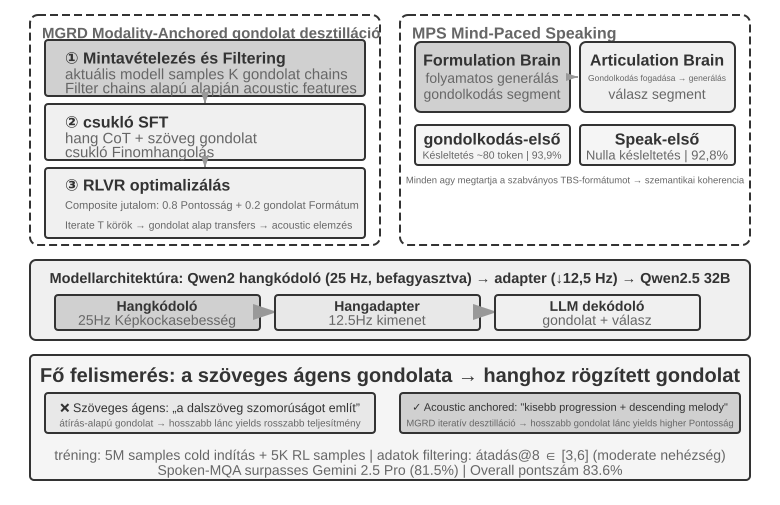
9-4. kísérlet ★★★: A Step-Audio R1 használata végponti beszélt érveléshez
Ez a kísérlet a Step-Audio R1-et használja több konfiguráció összehasonlítására beszélt-érvelési és párbeszédfeladatokon. A modell egy hangkódolóból, egy hangadapterből és egy Qwen2.5 32B dekódolóból áll, és több GPU-s telepítést igényel.
A kísérlet két feladatot értékel: a "Spoken-MQA" (Beszélt Matek Kérdések) azt teszteli, hogy a modell képes-e többlépcsős matematikai érvelésre egy szóban előadott probléma meghallása után; az "URO-Bench" (Kínai Szóbeli Párbeszéd Benchmark) a nyílt végű párbeszéd minőségét értékeli.
A tesztkonfigurációk két dimenzióra oszlanak. Az első a "Gondolkodás Időzítése": a teljes "TBS" (Think-Before-Speak) konfiguráció, amely késleltetés-korlátlan kontroll alapvonal, az összes gondolatot a beszéd előtt generálja. A késleltetés csökkentése érdekében az MPS két "gondolkodva beszélő" változatot kínál — "Speak-First" (spkfirst, nulla késleltetés, a beszéd és a gondolkodás egyidejűleg indul) és "Think-First" (thkfirst, vár, amíg a gondolkodó agy produkálja az első szegmenst a beszéd előtt, körülbelül 80 token késleltetéssel). A második dimenzió az "Architektúra": MPS párhuzamos kétagyú architektúrája versus hagyományos egy modelles TBS.
A 9-1. táblázat összehasonlítja a különböző időzítési és architektúra konfigurációk matematikai pontosságát és párbeszéd pontszámait.
9-1. táblázat: A Step-Audio R1 beszélt-érvelési konfigurációinak összehasonlítása
Konfiguráció Spoken-MQA URO-Bench Válasz gondolkodás nélkül (Baseline) 70,6% 77,4 MPS Speak-First (Nulla Késleltetés) 92,8% 82,5 MPS Think-First (~80 tok Késleltetés) 93,9% 84,8 Teljes TBS (Nincs Késleltetési Korlát) 93,0% — Egy érdekes megállapítás, hogy a Speak-First minimális hatással van a gondolkodási feladatokra (92,8% közel van a teljes TBS konfiguráció 93,0%-ához). Ennek az az oka, hogy egy "CoT" (Chain-of-Thought) eleje általában csak a probléma tartalmát ismétli meg, és még nem lépett be a valódi érvelésbe. Ezért még ha a modell a beszéddel egyidejűleg kezdi is a gondolkodást, a végső pontosságot alig befolyásolja. Egy másik figyelemre méltó részlet, hogy a Think-First (93,9%) még kissé magasabb is, mint a késleltetés-korlátlan teljes TBS konfiguráció (93,0%). Az egyik lehetséges magyarázat az, hogy a gondolatok szegmensekben történő előállítása és szegmensenkénti beszéddé alakítása lépésenkénti felügyeletként működhet, javítva a teljesítményt; a különbség azonban a hibahatáron belül van, és nem szabad túlértelmezni.
A 3. megoldás egyetlen modellbe internalizálja a gondolkodást — a "gondolkodva beszélés" legelegánsabb megvalósítása —, de az ára pontosan a szakasz elején említett "mozgó célpont": egy modellnek kell lennie a legerősebb érvelőnek és egy valós idejű beszélőnek is, és mivel mindkét képesség gyorsan fejlődik, az egyesített útnak újra és újra kell tanulnia, hogy lépést tartson. Ezért alakult ki az iparági megosztottság a cikk írásakor: a frontvonalbeli termékek, amelyek azonnal be akarják építeni a legújabb agyat (GPT-Live, Grok Voice, Pine AI), többnyire a 2. megoldás szétválasztására fogadnak, míg a 3. megoldás azoknak a termékeknek felel meg, amelyek a végső természetességre törekednek, és fel tudják venni a specializált tanítási költséget. Egyik sem váltja fel a másikat; ez egy kompromisszum az érvelő modell becserélhetősége és a szorosabban integrált gondolkodás és beszéd között.
A gyors és lassú közötti interfész: Mit lehet átadni a szövegen túl?¶
(Ez a kereszt-forgatókönyvi diszkusszió rövid időre eltér a fejezet fő hangközpontúságától.) A 2. megoldás felfed egy figyelmen kívül hagyott tervezési dimenziót: amikor a lassú gondolkodás üzenetet ad át a gyors gondolkodásnak, a "szöveges" csatornát használja (egy javaslatot az állapotsoron keresztül). A szöveg könnyen érthető és hibakereshető, de szűk csatorna — a lassú gondolkodó gazdag köztes állapota néhány mondatba van besűrítve. Tehát a gyors és lassú közötti interfésznek szükségszerűen szövegnek kell lennie?
A valós idejű játékokban, az egyik leginkább időérzékeny környezetben, egy közvetlenebb megközelítés lehetséges: egy "Latens Híd"5. Fagyasszunk be egy kis modellt, amely a gyors reakciókért felelős (másodpercenként több tucat cselekvést produkál), és egy lassú modellt, amely az érvelésért felelős (másodpercenként egy gondolatot produkál), majd tanítsunk csak egy kis "hidat" néhány tízmillió paraméterrel közöttük. Ez a híd a lassú modell rejtett állapot-következtetéseit közvetlenül néhány "latens tokenbe" vetíti, és beilleszti azokat a gyors modell bemenetébe, hasonlóan ahhoz, ahogy a multimodális modellek vizuális tokeneket illesztenek be. Ez megkerüli a gömbölyű utat az ötlettől a szövegig és vissza egy belső reprezentációhoz. Számos Atari játékban a latens tér csatorna jelentősen felülmúlta a hagyományos szöveges csatornát (+26% és +82% között néhány játékban), miközben csak körülbelül 5 ezredmásodpercet adott hozzá lépésenként, ami elég gyors a valós idejű követelmények teljesítéséhez.
Ugyanez a munka becsületes határt is húz: az, hogy a gyors-lassú együttműködés segít-e, attól függ, hogy a feladat szűk keresztmetszete a "nem jut eszébe" vagy a "nem reagál időben". A híd csak ott térül meg, ahol a lassú gondolkodó valóban jobb, mint a gyors reaktor (játékok között ez a korreláció akár r≈0,9 is lehet); ahol a feladat pusztán reakciósebesség-verseny, a legfinomabb híd is haszontalan. Az ítélet a játékokon túl is érvényes — előrevetíti azt a kérdést, amellyel a Computer Use később szembesül ebben a fejezetben: mikor érdemes "lassú stratégát" meghívni, és mikor ad az csak késleltetést?
Akár végponti, akár moduláris, az érzékelési és végrehajtási rétegek minősége továbbra is számít. A végponti modellek architekturális szinten oldják meg a késleltetést, de a két alapvető dolog — pontosan hallani és természetesen beszélni — nem oldódik meg magától, ha az architektúra változik. A pontos hallás a Paradigma 1 streaming hangérzékelésének felel meg; itt a végrehajtási réteg felé fordulunk a természetes beszédért: emberibb beszédszintézis.
Emberibb beszédszintézis¶
A hagyományos TTS "tökéletessége" pontosan a probléma: a kifogástalanul folyékony, szünetek vagy töltelékszavak nélküli beszéd tagadhatatlanul gépi eredetű. Az emberi beszéd "tökéletlenségei" — szünetek, töltelékszavak ("ööö", "izé", "tudod") és alkalmankénti ismétlés — nem hibák, hanem a gondolkodási folyamat természetes jelei, amelyek azt üzenik a hallgatónak: "gondolkodom" vagy "nem vagyok teljesen biztos". Egy MI azonban gyorsabban tud választ generálni, mint ahogy az a válasz hangosan kimondható, és a kimenete folyékonyan és teljesen érkezik; ha szó szerint szintetizáljuk, a mesterséges jellege nyilvánvalóvá válik.
"Megoldás": A szünetek helyére és a hangnemre vonatkozó döntések átadása a fő LLM-nek. Az LLM nemcsak szöveget ad ki, hanem vezérlő tokeneket is: [THINKING] egy 1-2 másodperces gondolkodási szünetet és egy töltelékhangot jelez ("ööö..."); [SEARCHING] egy rövidebb szünetet és tétova kifejezéseket jelez ("tudod...", "hogy is mondjam"); [EMO:happy] beállítja a hangszínt és a prozódiát; [SPEED:0.8x] szabályozza a beszédtempót. Csak az LLM tudja, hogy éppen egy összetett kérdésen dolgozik-e, és szünetet kell-e tartania, hogy a felhasználó türelmetlen-e, és gyorsítania kell-e, vagy ez csak csevegés, és élénken kell hangzania.
Ebben a sémában a TTS multimodális generátorként működik, szöveg + vezérlő tokeneket vesz bemenetként, és hangot ad ki. Normál szöveg esetén normálisan szintetizál beszédet, vezérlő tokenek esetén pedig megfelelő nem nyelvi hangokat generál: a [THINKING] egy elnyújtott "ööö..."-t generál, a [SIGH] egy sóhajt, a [LAUGH:small] egy halk nevetést, a [BREATH] egy belégzési hangot.
Két implementációs út létezik: az egyik a saját fejlesztésű TTS, natív támogatással a vezérlő tokenekhez (a legrugalmasabb lehetőség, de specializált csapatot igényel); a másik a hangklónozás használata. Készítsünk több tucat referenciaklipet ugyanahhoz a virtuális személyiséghez, lefedve a különböző érzelmeket, tempókat és stílusokat, majd válasszuk ki a legjobban illő klipet minden vezérlőtoken-kombinációhoz egy TTS API (például ElevenLabs vagy Fish Audio) hívásakor. Ez a megközelítés heteken belül telepíthető.
9-5. kísérlet ★★: Vezérlőtoken-vezérelt TTS Fish Audio alapokon
Használjuk a Fish Audio S1 hangklónozási képességét (csak 3-10 másodperc referenciáshang szükséges a nullszoros klónozáshoz ugyanazzal a hangszínnel). Építsünk egy 24 referenciásklipből álló könyvtárat, lefedve az Érzelem (Semleges/Boldog/Csalódott/Gondolkodó) x Tempó (Normál/Gyors/Lassú) x Stílus (Formális/Közvetlen) kombinációkat, mindegyik körülbelül 5 másodperc hosszú.
LLM kimeneti példa:
[EMO:happy][SPEED:fast]Nagyszerű! A rendelését megerősítettük.[THINKING]Ööö, hadd ellenőrizzem a szállítási időt...[EMO:neutral][SPEED:normal]Holnap délután várhatóan megérkezik.A végrehajtási réteg elemzi a tokeneket, és hozzárendeli a megfelelő referenciáshanghoz:
[EMO:happy][SPEED:fast]a "Boldog+Gyors+Közvetlen" referenciához;[THINKING]a "Gondolkodó+Lassú+Formális" referenciához (szünet ritmussal és tétova hanghordozással);[EMO:neutral][SPEED:normal]a "Semleges+Normál+Formális" referenciához. A Fish Audio biztosítja a konzisztens hangszínt a különböző referenciásklipek között, csak a prozódiát és az érzelmet változtatva.Hasonlítsunk össze három konfigurációt: nincs vezérlő token (folyékony, de robotikus és nyilvánvalóan MI által generált), egyetlen referenciásklip (természetes, de érzelmileg monoton), és többreferenciás könyvtár (vidám és gyors információ megerősítésekor, természetes szünetek magyarázatok előtt, és összességében egy emberi ügyfélszolgálati képviselőhöz közeli előadásmód).
Computer Use: Grafikus Felület Automatizálási Ügynökök¶
Mire mostanra észrevehették, hogy ez a fejezet sokkal több teret szentel a hangnak, mint a következő két forgatókönyvnek. Ez szándékos. A valós idejű multimodális rendszerek közül a hangtechnológia haladt a legmesszebbre, ezért nyújtja a legjobb referenciát. Végigjárta a teljes ívet az eredeti problémától — a soros csővezetékek túlzott késleltetése — a végponti modelleken, a teljes duplex interakción és a gondolkodva beszélésen át a mai viszonylag érett tervekig. Ezért meséltük el a történetét teljes egészében. Ahogy olvassák a Computer Use és a robotika szakaszokat, hasonlítsák össze ezzel a pályával: az egyes területek milyen messzire jutottak, és hol maradtak meg?
Ez a három forgatókönyv különbözőnek tűnik, de ugyanazokkal a magkihívásokkal néz szembe: valós idejű érzékelés, alacsony késleltetésű döntéshozatal és folyamatos interakció. Ezután a vizuális interakcióra, vagyis a Computer Use-re térünk, kiterjesztve a perspektívát a hallásiról a vizuális modalitásra: mi lenne, ha egy ügynök nemcsak a beszédet értené, hanem "látná" is a képernyőt, és kezelné a grafikus felületet?
A Computer Use, más néven GUI automatizálás, lehetővé teszi a mesterséges intelligencia számára, hogy úgy használja a szoftvereket, mint egy ember, a képernyő megfigyelésével és az egér és billentyűzet kezelésével — például böngésző megnyitása információk kereséséhez, adatok beírása egy táblázatkezelő alkalmazásba, vagy beállítások módosítása a rendszer beállításaiban. Magja egy "Perceive-Think-Act" (Érzékel-Gondolkodj-Cselekedj) ciklus (9-7. ábra):
- Az ügynök képernyőképet készít az aktuális képernyőről.
- Egy multimodális modell megkapja a képernyőképet és a feladatutasítást, és kiad egy gondolatot és egy konkrét cselekvést.
- A végrehajtási réteg végrehajtja a cselekvést a valós környezetben (egér mozgatása, kattintás, szöveg beírása stb.).
- Megvárja a felület válaszát, újabb képernyőképet készít, és belép a ciklus következő iterációjába.
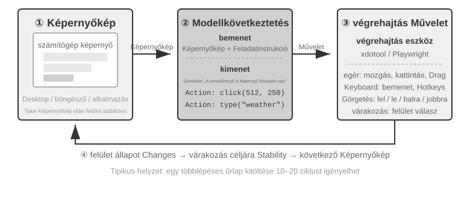
Ebben a ciklusban három kulcsfontosságú tervezési dimenzió van: "Cselekvési Tér" (milyen műveleteket végezhet az ügynök), "Vizuális Helymeghatározás" (hogyan találja meg a cél elemet a képernyőképen), és "Modell Architektúra" (hogyan generálja a helyes cselekvést a képernyőképből).
Cselekvési Tér Tervezése¶
Az Anthropic három eszköztípust határoz meg, amelyek teljes interakciós képességet alkotnak (9-8. ábra):
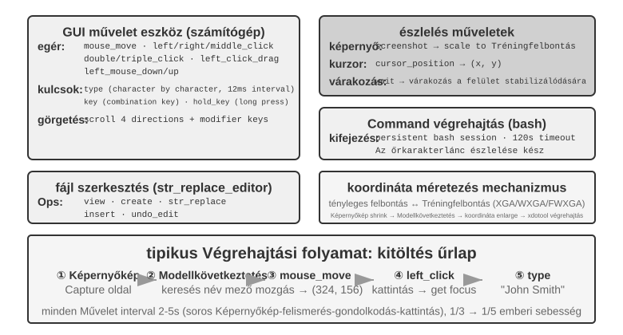
"GUI Kezelő Eszköz" (computer eszköz): Egérműveletek: mozgatás (mouse_move), bal/jobb/középső kattintás, dupla- vagy háromszoros kattintás, húzás (left_click_drag), és pontosabb lenyomás/elengedés műveletek (left_mouse_down és left_mouse_up). Görgetés (scroll) négy irányt támogat, és kombinálható módosító billentyűkkel. Billentyűzetműveletek: karakterenkénti gépelés (type, 12 ms intervallummal a karakterek között a valódi gépelés szimulálására), billentyűkombinációk (key, pl. Ctrl+C), és billentyű lenyomva tartása (hold_key). Érzékelési műveletek: képernyőkép készítése, kurzorpozíció lekérése (cursor_position), várakozás (wait).
"Parancsvégrehajtási Eszköz" (bash eszköz): Perzisztens bash terminál munkamenetet biztosít 120 másodperces időkorláttal. Egy őrszöveges karakterláncot használ a parancs befejeződésének érzékelésére, és megtartja a környezeti állapotot több hívás között (pl. egy könyvtárba cd után a következő hívás abban a könyvtárban marad).
"Fájlszerkesztő Eszköz" (str_replace_editor): Biztonságos szerkesztést tesz lehetővé karakterlánc-illesztésen keresztül, támogatva a megtekintést, létrehozást, cserét, beszúrást és visszavonást. Pontosabb, mint a teljes fájl felülírása, és kisebb a valószínűsége, hogy véletlenül más tartalmat módosít.
9-6. kísérlet ★: Az Anthropic Computer Use Demó futtatása
A konténer egy teljes Ubuntu asztali környezetet tartalmaz böngészővel, terminállal és más gyakori eszközökkel. A front-end megkapja a feladatutasításokat, a back-end elküldi ezeket az utasításokat és a képernyőképeket a Claude-nak, a modell pedig olyan cselekvéseket ad vissza, mint az egér mozgatása, kattintás és gépelés. A rendszer ezután végrehajtja ezeket a cselekvéseket a virtuális asztalon.
Kulcsfontosságú megfigyelés: Minden cselekvési ciklus 2-5 másodpercet vesz igénybe, ami a rendszert jelentősen lassabbá teszi egy embernél. Ennek ellenére a gyakori feladatokon jó tervezést mutat, és önállóan ésszerű cselekvési sorozatokra bontja azokat.
Vizuális Helymeghatározás¶
A ciklus minden iterációjában a modellnek pontosan meg kell találnia a cél elemet a képernyőképen — "Hol van a keresőmező?" "Mik a beküldő gomb koordinátái?" Ez a vizuális helymeghatározás problémája. Jelenleg "két fő megközelítés" létezik: az egyik a lokalizációt "többválasztásos problémává" alakítja — először számokkal annotáljuk a felületi elemeket, a modellnek csak ki kell választania egyet; a másik a "tiszta koordináta előrejelzés" — hagyjuk, hogy a modell "nézze" a képernyőképet, és közvetlenül adjon meg koordinátákat, akár egy ember. A többválasztásos megközelítésnek két implementációs módja van: "tiszta vizuális annotáció" (az eredeti Set-of-Mark, egy szegmentációs modell használatával a képen lévő jelölt régiók szegmentálására) és "strukturált elemindexálás" (DOM/Accessibility Tree, a felület eredeti struktúrájának közvetlen olvasása). A többválasztásos megközelítés közös előnye, hogy a "keresd meg a gombot a képernyőképen és jelezd előre a koordinátáit" nyílt végű problémát egy "válassz egyet a már annotált elemek közül" zárt végű problémává alakítja — ahogy a többválasztásos kérdésekre könnyebb helyesen válaszolni, mint a kitöltendő kérdésekre egy vizsgán, a modellnek csak annyit kell mondania, hogy "kattints [123]-ra" ahelyett, hogy "kattints a kék gombra, körülbelül 200 pixellel a képernyő bal felső sarkától jobbra".
"Set-of-Mark: Vizuális Annotációs Módszer."
Az eredeti Set-of-Mark (SoM) a Microsoft Research által 2023-ban javasolt, kezdetben a GPT-4V vizuális helymeghatározási képességeinek felszabadítására. Ez egy "tisztán vizuális" módszer: képszegmentációs modelleket (SAM, SEEM stb.) használ a képernyőképen lévő jelölt régiók automatikus szegmentálására, számozott markert helyez minden régióra, és a modell számokkal ellátott képet lát. A modellnek csak a számot kell jelentenie, a rendszer pedig átalakítja a megfelelő régió középponti koordinátáivá. A teljes folyamat nem igényel DOM-ot vagy belső felületi struktúrát, így egyaránt alkalmazható natív asztali szoftverekre és játékfelületekre — amíg a szegmentációs modell azonosítani tudja a jelölt régiókat.
Strukturált Elemindexálás: Az SoM-ötlet strukturált implementációja a weben.
Amikor a felület maga biztosít strukturált információt, az annotáció pontosabb lehet. A modern weboldalak a renderelés előtt meghatároznak egy teljes elemstruktúrát (a DOM fát) és szemantikus szerepeket, amelyek azonosítják a gombokat, beviteli mezőket és más vezérlőket. Az akadálymentesítési fák hasonló információt nyújtanak sok asztali alkalmazáshoz. Ahelyett, hogy egy szegmentációs modellt kérnénk meg, hogy pixel alapján találja ki, melyik régió egy gomb, a rendszer közvetlenül lekérdezheti a felületről a kattintható elemeket. A webes ügynökrendszerek, mint a browser-use, pontosan ezt teszik: felsorolják és számozzák az interaktív elemeket a DOM-ból. Ez az SoM-ötlet strukturált implementációja a web számára (9-9. ábra). A folyamat négy lépésből áll:
- A strukturált reprezentáció (DOM fa) és akadálymentesítési információk lekérése a böngésző hibakereső felületén keresztül (CDP, Chrome DevTools Protocol)
- Automatikusan érzékelni, hogy mely elemek interaktívak (gombok, beviteli mezők, linkek stb.)
- Minden interaktív elemet egyedi azonosítóval annotálni és határoló kereteket rajzolni a képernyőképen
- Egyidejűleg egy szöveges listát generálni, amely leírja az egyes azonosítókhoz tartozó elemet
Képernyőkép: [A képen a kulcselemek [1], [2], [3], [4] azonosítókkal vannak annotálva]
Elemek:
[1] <input type="text" placeholder="Keresés" aria-label="Keresés" />
[2] <button id="submit-btn" aria-label="Űrlap beküldése" />
[3] <input type="text" placeholder="Adja meg a nevét" value="" />
[4] <a href="/docs" aria-label="Dokumentáció" />
A modellnek csak egy azonosítót kell kiadnia, és a rendszer automatikusan rákattint a megfelelő elem középpontjára. Ez a megközelítés nem takarít meg tokeneket, mert minden annotációs adatot el kell küldeni a modellnek, de pontos, stabil lokalizációt biztosít, elkerülve a szegmentációs modellek által bevezethető kihagyásokat és téves pozitívumokat.
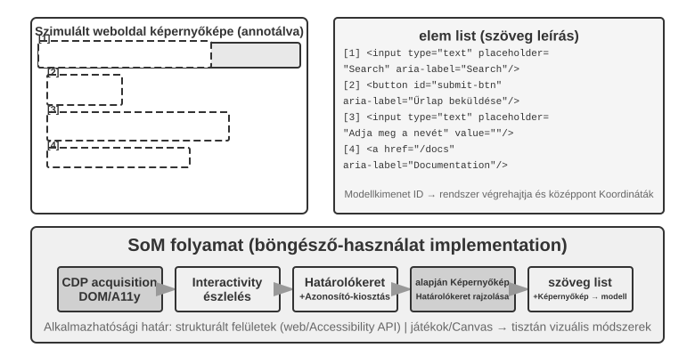
"Tiszta Koordináta Előrejelzés."
A harmadik út kihagyja az annotációt, és megkéri a modellt, hogy közvetlenül adjon meg koordinátákat. Az olyan rendszerek, mint a "SeeClick" és a Claude computer use, olyan látásmodellekre támaszkodnak, amelyeket GUI képernyőképek és elempozíciók hatalmas adatkészletein tanítottak. Ezek a modellek megtanulják a természetes nyelvű leírásokat (pl. "kattints a beküldő gombra") közvetlenül pontos képernyőkoordinátákra leképezni, vizuális érzékelésre támaszkodva, mint egy emberi felhasználó.
A koordináta-előrejelzési sémákban a modell koordináta-megértése nagymértékben függ a tanítás során használt felbontástól (9-10. ábra). A Claude-ot XGA (1024×768), WXGA (1280×800) és FWXGA (1366×768) felbontásokon tanították. Ha a bemeneti képernyőkép felbontása nem egyezik, a modell által előrejelzett koordináták szisztematikusan eltolódnak — mintha egy távolságot egy kis térképen mérnénk meg, majd közvetlenül egy nagy térképre alkalmaznánk. Ezért egy kétirányú koordináta-skálázó mechanizmust kell implementálni az eszköz rétegben, és a célfelbontást "a képarány alapján kell kiválasztani", hogy elkerüljük az egyenlőtlen nyújtást, amely torzítja a képet, és ezáltal torzítja a koordináta-ítéletet. Például, ha a tényleges képernyőfelbontás 2560×1440 (16:9), a Claude három támogatott opciója közül a legmegfelelőbb cél az FWXGA (1366×768), amelynek képaránya a legközelebb van a 16:9-hez. A képernyőképet arányosan 1366×768-ra skálázzák és táplálják a modellbe; miután a modell kiadja a kattintási koordinátákat (683, 384), azokat visszafejtik a valós koordinátákra (683×2560/1366, 384×1440/768) ≈ (1280, 720). Ezzel szemben, ha egy 16:9-es képet erőszakosan 4:3-as 1024×768-ra nyújtanak, a kép vízszintesen összenyomódik, ami a modell által előrejelzett koordináták szisztematikus eltolódását okozza.
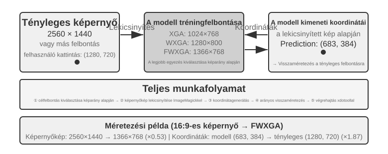
A három út közötti választás a következőképpen foglalható össze: ha strukturált információ áll rendelkezésre, részesítsük előnyben a DOM/akadálymentesítési fa indexálást a legpontosabb és legstabilabb lokalizáció érdekében. "Ha nem áll rendelkezésre" — natív asztali szoftverekben, például Photoshop, canvas/WebGL renderelt felületek vagy játékok esetén — használjunk vizuális annotációt (az eredeti SoM utat) vagy koordináta előrejelzést. A vizuális annotáció többválasztásos problémává alakítja a lokalizációt, ami barátságosabbá teszi az általános célú modellek számára specializált tanítás nélkül. A koordináta előrejelzés kiküszöböli az annotációs lépést, és közvetlenebb a kifejezetten GUI lokalizációra tanított modellek számára. Mindkét megközelítés továbbra is küzd a kis elemekkel és a sűrű felületekkel.
9-7. kísérlet ★: A browser-use használata automatizált böngészőműveletekhez
Kombináljuk a Playwright-ot, egy böngésző-automatizálási keretrendszert, egy multimodális modellel, hogy természetes nyelvű utasításokkal vezérelt böngészőműveleteket implementáljunk. Engedélyezzük az SoM vizualizációt, és mentsük el a képernyőképeket annotált határoló keretekkel minden döntés előtt.
Tesztfeladat "Nyisd meg a Google-t és kérdezd le a San Francisco-i időjárást": A rendszer elindulása után a képernyőkép a Google keresőoldalt mutatja, az összes interaktív elem piros határolókerettel és azonosítószámmal ellátva (címsor
[1], keresőmező[2], keresőgomb[3], "Szerencsém van" gomb[4]stb.) → A modell elemzi és rákattint[2]-re (a keresőmező) → A keresőmező fókuszba kerül, és a modell beírja "San Francisco időjárás ma" → A modell rákattint[3]-ra (a keresőgomb) → Az oldal a keresési eredményekre navigál, a következő képernyőkép az időjárás kártyán belüli annotált elemeket mutatja, lehetővé téve a modell számára az olyan információk azonosítását és kinyerését, mint a hőmérséklet és az időjárási körülmények. A teljes folyamat 5 lépést és körülbelül 20 másodpercet vesz igénybe.
Egy Computer Use ügynök, aki animációkat nézhet és hangot hallhat¶
Eddig a Computer Use érzékelés egy implicit feltételezésen nyugodott: "a képernyő statikus" — készítsünk egy képernyőképet, gondolkodjunk a következő lépésről, kattintsunk, és készítsük a következő képernyőképet. A valódi képernyők videókat játszanak le, másodpercek alatt eltűnő értesítéseket villantanak fel, és hangot játszanak le értekezletekről. Egy ügynök, aki csak 3-5 másodpercenként nyitja ki a szemét, és nincs füle, vak és süket mindenre, ami két képkocka között történik. Képernyőfelvétel nézése, értekezlethez csatlakozás, hangutasítás követése, egy párbeszédablak elkapása, mielőtt eltűnik — a mindennapi számítógépes munka egész kategóriája gyakorlatilag elérhetetlen a mai Computer Use ügynök számára.
Amit itt valóban újra kell tervezni, az nem a "cselekvési interfész", hanem az „észlelési interfész”6. A magötlet az "észlelés" (folyamatos, adaptív, multimodális) leválasztása a "cselekvésről" (diszkrét), létrehozva egy perceptuális köztes réteget, amely a környezet és bármely polcról beszerezhető Computer Use modell közé ül anélkül, hogy újratanítást igényelne. Nevezzük ezt Ügynök-Számítógép Észlelési Interfésznek (AOI). Három "kapuzott" komponense van: Először is, "képkockák közötti kulcskocka rögzítés" — használjunk egy nagyon olcsó pixel-kaput a szinte változatlan képkockák kihagyására, majd egy kis modellt annak meghatározására, hogy történt-e értelmes változás, rögzítve egy képkockát csak akkor, ha van változás, ami közel nulla költséget eredményez a statikus képernyőkhöz; Másodszor, "hangerő-kapuzott beszédátírás" — csak akkor hívjuk a beszédfelismerést, ha van hang, először adva "füleket" az ügynöknek; Harmadszor, és ami a legkritikusabb, "az észlelések átalakítása perzisztens szöveges leírásokká" — kérjük meg a modellt, hogy egyetlen mondatban írja le a rögzített képkockát (pl. "A felugró ablak éppen azt mondta, hogy a kiadási dátumot április 28-ra módosították"), és még ha az eredeti kép később el is távolításra kerül a kontextusból, ez a szöveg megmarad a memóriában, továbbvíve a dinamikus információt szöveges formában.
A nem intuitív megállapítás az, hogy ami igazán számít, az nem a képkocka kiválasztása, hanem a kiválasztott képkockák átalakítása perzisztens szöveggé, mert a szöveg az a modalitás, amelyet az LLM-ügynökök a legjobban kezelnek. Nyolc modellen keresztül, a 7B paraméteres modellektől a frontvonalbeli rendszerekig, ez a köztes réteg +17 és +48 százalékpont közötti nyereséget biztosított minden újratanítás nélkül, a legnagyobb különbséggel a hangfeladatoknál: az észlelési réteggel az ügynök végre el tudta végezni azokat a hangfeladatokat, amelyek korábban "hallhatók, de nem végrehajthatók" voltak. Azonban nem egy mindenre egyformán jó konfigurációról van szó — néhány újabb modellen a túl sok képkocka token beszúrása kiszorítja az érvelést, és rontja a teljesítményt. Ezért a komponenseket "modellenként kell kiválasztani", nem egyszerre bekapcsolni. Ugyanaz a lecke, mint a Set-of-Mark versus koordináta előrejelzés kompromisszuma: nincs ezüstgolyó az észlelési sémákban; konfigurálni kell őket a modell természetéhez.
Mobil: Az ökoszisztéma akadályok keményebbek, mint a technológia¶
A Computer Use a mobileszközökre is kiterjed. A mobil és asztali rendszerek technikailag különböznek: az egérkoordináták és billentyűzetbemenet helyett a mobil cselekvési tér jellemzően a rendszer akadálymentesítési szolgáltatás API-ját (pl. Android AccessibilityService) használja a felületi elemek olvasására és kattintások vagy szövegbevitel kiadására. Az interakció is az egérmutatóról érintési gesztusokra vált, megváltoztatva a koordináták jelentését. Ugyanaz az (x, y) pozíció jelenthet érintést, hosszú lenyomást vagy egy húzás kezdőpontját, ezért a cselekvésnek meg kell adnia a gesztus típusát is. A mobil benchmarkok, mint a 6. fejezetben bemutatott AndroidWorld, ebben a cselekvési térben értékelik az ügynök képességét a valós alkalmazásokban végzett feladatok elvégzésére.
Azonban ami valóban akadályozza a mobil Computer Use-t, az gyakran nem ezek a technikai különbségek, hanem az ökoszisztéma akadályok. Egyes telefon gyártók megkíséreltek MI asszisztenseket integrálni fogyasztói telefonokba, hogy az asszisztensek automatikusan kezelhessék a mindennapi alkalmazásokat, mint a WeChat, Taobao és Alipay, de gyorsan platformkorlátozásokba ütköztek.
Ez felfedi a Computer Use egyedi kihívását: "ökoszisztéma akadályok". E korlátozások mögött üzleti modell konfliktus áll. A hagyományos internetes alkalmazások magjának monetizációs logikája a "forgalom és a figyelem": a felhasználók hirdetéseket látnak a hírfolyam görgetése közben, ajánló algoritmusok irányítják őket a termékek keresésekor, és impulzusvásárlásokat hajtanak végre az oldalak böngészése közben. Amikor egy ügynök a felhasználó nevében működik, ez a monetizációs lánc teljesen megkerül: a MI figyelmen kívül hagyja a hirdetéseket, nem végez impulzusvásárlásokat, egyenesen a cél felé halad, befejezi a feladatot, és távozik. Azok számára a platformok számára, amelyek a reklámból és a forgalomból élnek, minden ügynöki művelet aláássa az üzleti modell alapját.
Ez azt jelenti, hogy a Computer Use nemcsak technikai ellenintézkedésekkel (mint a CAPTCHA) néz szembe, hanem egy "strukturális érdekellentéttel is". Ezt a konfliktust rövid távon nehéz lesz feloldani, és nagyobb akadályt jelent a fogyasztói elterjedésben, mint a tisztán technikai problémák.
Valós Idejű Teljesítmény: A Megoldatlan Magkihívás¶
Az "OSWorld", amelynek értékelési módszertanát a 6. fejezet írja le, egy széles körben használt benchmark a Computer Use számára, amely az ügynök képességét teszteli a feladatok elvégzésére valós Ubuntu/Windows/macOS környezetekben, alkalmazásokon átívelően. A korai általános célú modellek csak körülbelül 20%-os sikerességi arányt értek el ezen a benchmarkon. A későbbi specializált modellek és erősebb általános célú modellek folyamatosan emelték a sikerességi arányt, fokozatosan megközelítve az emberi szintű teljesítményt a cikk írásakor. Azonban a sikerességi arány messze van a céltól — a valódi szűk keresztmetszet a "helyesen tudja csinálni?"-ról a "gyorsan tudja csinálni?"-ra tolódott.
Az "OSWorld-Human" hatékonysági tanulmány elgondolkodtató megállapítást hoz: még ha a feladat végül sikeres is, az ügynöknek észrevehetően több lépésre van szüksége, mint egy embernek, és a lépésenkénti inferencia késleltetés folyamatosan nő a feladat előrehaladtával — minél hosszabb a kontextus, annál lassabban dönt a modell, így a késői lépések gyakran sokkal tovább tartanak, mint a koraiak. Egy olyan dokumentum-formázási módosítás, amely egy embernek több tíz másodpercig tart, egy ügynöknek több percet is igénybe vehet. Az emberi szintű pontosság nem azonos a gyakorlati használhatósággal; a hatékonyság az igazi szűk keresztmetszet.
A kiváltó ok visszaköszön a beszéd forgatókönyvből: a soros "képernyőkép-gondolkodj-kattints" ciklusban, még ha minden szakaszt a végsőkig optimalizálunk is, a lépésenkénti késleltetés felhalmozódása elfogadhatatlan marad. A mélyebb probléma az, hogy a mai Computer Use egyáltalán nem tud előre gondolkodni. Ha egy ügynök előre tudná jelezni a következő lépést, miközben az aktuálisat hajtja végre — kitalálná, hova kell következőnek kattintani, amíg az oldal még tölt —, átfedésbe hozhatná a gondolkodást a végrehajtással, és drasztikusan csökkenthetné a teljes késleltetést (ugyanaz a követelmény, mint a gondolkodva beszélés korábban e fejezetben, és a 4. fejezet "folyamatos gondolkodású" aszinkron ügynöke, itt gondolkodva operálásként újrafogalmazva).
A beszéddoménnel ellentétben jelenleg nincs szisztematikus megoldás a Computer Use saját valós idejű teljesítményének javítására — gyorsabbá tenni a "képernyőkép-gondolkodj-kattints" ciklust —, és az továbbra is egy diszkrét, képkockánkénti képernyőkép-ciklusban ragadt. Azonban egy kerülő út már bizonyítottan hatékony, a gyors-lassú szétválasztást használva, amely újra és újra megjelenik ebben a fejezetben: mivel nehéz egy lassú Computer Use ügynököt gyorsabbá tenni, "ne várakoztassuk a felhasználót". Használjunk két modellt párhuzamosan: egy gyors modellt a beszédhez és egy lassú modellt a számítógép-kezeléshez7. A gyors modell kezeli a valós idejű hangalapú beszélgetést, míg a csúcskategóriás VLM lépésről lépésre működik a böngészőben. A kettő csak egy minimális "egyszerű szöveges szerződésen" keresztül kommunikál: minden alkalommal, amikor a lassú ügynök végrehajt egy műveletet, frissít egy gördülő állapot-összefoglalót ("Kitöltöm az űrlapot, még szükség van a születési dátumára"). A gyors ügynök ezt használja a felhasználó valós idejű megválaszolására, és továbbítja a felhasználó által szóban adott új információkat a lassú ügynöknek. Kritikus, hogy a gyors ügynök soha ne mondja, hogy "kész", amíg az állapot-összefoglaló meg nem erősíti a befejezést. Ez a "telefonon beszélni, miközben hagyja, hogy a számítógép magától működjön" forgatókönyv. Kísérletekben ez a szétválasztás körülbelül 15-ször gyorsabbá tette a hangválaszokat, mint egyetlen, egyszerre operáló és beszélő modell (medián késleltetés 0,58 másodperc vs. 8,64 másodperc), a feladat sikerességi arányának csökkenése nélkül. A gyors és lassú közötti szöveges csatorna eltávolításával a siker nullára csökken — a felhasználók által szóban adott kulcsinformációk többé nem érik el a böngészőt. Ez ugyanaz az ötlet, mint a korábbi Latens Híd és a gondolkodva beszélés a beszéd forgatókönyvben: amikor az egyik komponens eredendően lassú, hagyjon egy gyorsat kitölteni a felhasználó várakozási idejét — és ez az "egyszerű szöveges szerződés" alapvetően a 2. fejezetben bevezetett Ügynök Állapotsor koncepció. Magának a Computer Use ciklusnak a felgyorsítása lehet a következő fontos kutatási irány, de a lassúság elrejtése a gyors-lassú szétválasztás mögött már most is működőképes válasz.
Robot Manipuláció: Valós idejű vezérléstől a tanításig és általánosításig¶
"Olvasási megjegyzés": Ez a szakasz a robotvezérlést tárgyalja. A 9-10. kísérlet egy szimulációból valóságba történő átviteli módszert mutat be — a szimulációs tanítási rész (3-4. lépések) csak egy GPU szerverrel elvégezhető; azonban a teljes csővezeték végponttól végpontig történő reprodukálásához (beleértve a valós telepítési lépéseket is) valódi hardverre, például SO100 robotkarra van szükség. Ha jelenleg nem érdeklik a robotika iránt, kihagyhatja ezt a szakaszt; nem befolyásolja a többi fejezet olvasását.
A hangügynökök a hallási modalitásban küzdenek a késleltetéssel; a Computer Use a vizuális modalitásban teszi ugyanezt. Amikor egy ügynöknek egy robotot kell irányítania a fizikai világban, a késleltetés és a multimodalitás még keményebben harap — a cselekvések visszafordíthatatlan következményekkel járnak, és egyetlen ütközés károsíthatja a tárgyat vagy magát a robotot. Ez a szakasz először bemutatja, hogyan szelídítik meg a robotok a valós idejű vezérlési problémát egy kétrétegű architektúrával és cselekvés-darabolással, majd rátér a ma előttük álló nehezebb problémára — a tanításra és általánosításra: honnan származnak az adatok, és hogyan váltanak át a modellek feladatok és platformok között.
A Hardver Nem a Szűk Keresztmetszet; Az Algoritmusok Azok¶
Miért nem terjedtek el a robotok széles körben nyitott végű, általános célú környezetekben? A szűk keresztmetszet a hardver vagy az algoritmusok? Az XLeRobot projekt egy meggyőző ellenpéldát szolgáltat: amikor egy ember VR headseten keresztül távirányítja, egy 1000 dollárnál olcsóbb kétkarú kerekes robot már számos háztartási feladatot képes simán elvégezni. A Unitree robotok ügyes kezeket igénylő, összetettebb háztartási feladatokat is képesek kezelni, ha ember irányítja őket. A távirányítás késleltetése körülbelül 100-200 ms, közel a fizikai interakcióhoz szükséges válaszidőhöz. A mai alacsony költségű platformokon az érzékelő felbontás, a működtető pontosság és a vezérlési frekvencia — ahányszor másodpercenként a robot frissíti a cselekvési parancsokat — már elegendő a gyakorlati feladatokhoz. Az alacsonyabb vezérlési frekvenciák kevésbé folyékony mozgást és nagyobb kilengést vagy eltérést eredményeznek a célpályától.
Ennek az állításnak világos határt kell szabni: a távirányítási példa csak azt mutatja be, hogy a meglévő olcsó hardver, emberi intelligenciával kombinálva, elegendő az elsősorban vizuális visszacsatolásra támaszkodó háztartási manipulációs feladatokhoz. Nem jelenti azt, hogy a hardver minden tekintetben megfelelő. A tapintási érzékelés hiánya, valamint az ügyes kezek költsége és megbízhatósága jól ismert korlátozások maradnak. Azoknál a feladatoknál, amelyek nagymértékben függnek a precíz erőszabályozástól és a tapintási visszacsatolástól, a hardver valóban szűk keresztmetszet lehet. A "hardver nem a szűk keresztmetszet" állítás ezért csak az ebben a szakaszban tárgyalt feladatok osztályára korlátozódik.
Ezeknél a feladatoknál a valódi hiányosság az algoritmikus rétegben van, amelyet a következő két alszakasz fejt ki.
"9-8. kísérlet ★: XLeRobot távirányítási élmény"
Az XLeRobot több távirányítási módszert támogat, beleértve a billentyűzetet, Xbox kontrollert, Nintendo Switch Joy-Con-t és VR headsetet. Kézzel irányítsuk a robotot, amint tárgyakat vesz fel és helyez el, vagy felületeket töröl le, és figyeljük meg a válasz késleltetését, a mozgás pontosságát és a feladat-végrehajtás minőségét. Ez a gyakorlati tapasztalat intuitív megértést épít a hardver képességeiről: emberi irányítás alatt a robot a vártnál tágabb feladatkört képes ellátni, ami arra utal, hogy az algoritmusok, nem a hardver jelentik a jelenlegi szűk keresztmetszetet.8
Kétrétegű Architektúra: Tervezés és Vezérlés Szétválasztása¶
A robotoknak két különböző időskálán kell döntéseket hozniuk az összetett háztartási feladatok elvégzéséhez. Az első réteg a lassabb "hosszú távú tervezés": egy magas szintű utasítás, például "takarítsd ki a konyhát" lebontása részcélok sorozatára (pakold le a pultot, töltsd be a mosogatógépet, töröld le a felületeket). Ez megköveteli a környezeti szemantika megértését, a feladatfüggőségek feletti érvelést és a többlépcsős cselekvési sorozatok tervezését — hasonlóan ahhoz, ahogy egy ember gondolkodik arról, hogy "mit csináljak először és mit azután" a kezdés előtt. A második réteg a gyorsabb "VLA vezérlés" (Vision-Language-Action modell): minden egyes konkrét művelet végrehajtása ("sétálj a mosogatóhoz", "vedd fel a rongyot", "töröld le a pultot"), folyamatosan vezérlőjeleket adva az aktuális vizuális bemenet és nyelvi utasítás alapján a sima és összefüggő robotmozgás biztosításához.
Ez a kétrétegű architektúra hatékonyan osztja szét a felelősségeket: a hosszú távú tervezés kezeli a "mit csináljunk", míg a VLA vezérlés kezeli a "hogyan csináljuk". A lassú magas szintű döntéshozatal és a gyors alacsony szintű végrehajtás kombinációja szorosan párhuzamba állítható a korábban a beszédnél leírt gyors-lassú architektúrával: mindkettő komplex érvelést és valós idejű válaszadást rendel különböző modulokhoz. A tervezés/vezérlés felosztás azonban a lassú mély érvelés versus a gyors valós idejű válaszadásnak felel meg, nem pedig az MPS Formuláló Agya és Artikulációs Agya közötti gondolkodás/kifejezés felosztásnak a 3. megoldásban. Az MPS a gondolkodást választja el a beszédtől; a robotika architektúra a globális tervezést választja el a valós idejű végrehajtástól. A két architektúra tehát a munkát különböző dimenziók mentén osztja fel.
A valós idejű korlátok nem tűntek el; leszorultak a VLA vezérlési rétegbe, ahol a "Cselekvés Darabolás" (Action Chunking) segít enyhíteni őket (lásd a "VLA Vezérlés" alszakaszt alább). A modell egyetlen inferencia során egy rövid jövőbeli cselekvéssorozatot generál, és a vezérlő szál nagy frekvencián játssza le őket, amortizálva az inferencia késleltetését a teljes sorozat végrehajtása alatt. Ez elkerülhetetlen kompromisszumot teremt a simaság és a reagálóképesség között: a hosszabb darabok szétterítik a késleltetést több cselekvésre, és simább mozgást eredményeznek, de a modell ezalatt nem kap új vizuális bemenetet, így lassabban reagál a hirtelen változásokra, például ha egy tárgyat elmozdítanak, vagy egy kéz elzárja az utat. A kétrétegű architektúra nem szünteti meg ezt a feszültséget; csupán áthelyezi.
A fejezet fókusza most eltolódik: a robotikában a valós idejű feszültséget részben enyhítette a kétrétegű szétválasztás és a cselekvés darabolás, míg a "tanítás és általánosítás" — hogyan szerezzünk elég demonstrációs adatot, és hogyan általánosítsanak a modellek feladatok és platformok között — vált a központi aggodalommá. A következő alszakaszok a 6. fejezet szimulációs környezeteinek és a 7. fejezet megerősítéses tanulásának témáit terjesztik ki a fizikai világba.
Ez az új kihívás elsősorban a VLA vezérlési rétegre hárul. Gondoljunk a VLA-ra mint "VLM + cselekvési kimenet": a "VLM" (Vision-Language Model — egy nagy modell, amely képeket és szövegeket is ért) kezeli az érzékelést és az érvelést, míg a VLA-nak cselekednie is kell — és a cselekvés az, ahol a valódi nehézség van. Ma a VLA vezérlési réteget elsősorban utánzó tanítás (imitation learning), vagyis "viselkedés klónozás" (behavior cloning) útján tanítják, amely emberi demonstrációk nagy gyűjteményeit használva tanulja meg az észlelések cselekvésekre való leképezését. Az OpenVLA, RT-2 és π₀ mind ebbe a kategóriába tartoznak. A megerősítéses tanulás (reinforcement learning) újabban jelent meg kiegészítő technikaként. Bár az RL-lel tanított VLA-k jól teljesíthetnek egyedi feladatokon, gyakran gyengén általánosítanak. Például a 7. fejezetben szereplő SimpleVLA-RL erős egyfeladatos eredményeket jelent a LIBERO-n, de minden feladathoz külön van tanítva, nem pedig egy egységes modellként, amely nullszorosan általánosít az összes feladaton. Ez az egy tanítási futtatás feladatonként minta azt jelenti, hogy minden új feladathoz friss adatgyűjtés és újratanítás szükséges.
A következő két szakasz a hosszú távú tervezés és a VLA vezérlés specifikus technikai megoldásaiba merül el.
Hosszú Távú Tervezés: A VLM-től a Specializált Megtestesült Érvelési Modellekig¶
Az általános célú VLM-ek már rendelkeznek elfogadható megtestesült érvelési (embodied reasoning) képességekkel. A Google DeepMind "Gemini Robotics-ER 1.5" kifejezetten a Megtestesült Érvelésre van optimalizálva (a fizikai világban lévő tárgyak pozíciójának, mozgásának és ok-okozati összefüggéseinek megértése). 62,8%-os átlagot ér el 15 akadémiai benchmarkon (Point-Bench, RefSpatial, RoboSpatial, BLINK stb.), felülmúlva a GPT-4o-t (60,6%) és a Gemini 2.5 Pro-t (59,3%). A fő előnyök közé tartozik: fejlett térbeli megértés és tárgy lokalizáció, időbeli érvelés (cselekvések következményeinek előrejelzése, mint "mi történik, ha meglököm ezt a csészét"), feladatsorrendezés (magas szintű utasítások lebontása kisebb lépésekre), valamint natív támogatás a gondolkodási mechanizmusokhoz és eszközhívásokhoz.9
9-9. kísérlet ★★: A Gemini Robotics-ER 1.5 használata az XLeRobot autonóm navigáció irányításához
Használjuk a RoboCrew könyvtárat a Gemini Robotics-ER 1.5-tel mint hosszú távú tervező modellel, szögskála annotációkat helyezve a kamera képeire. A rendszer csak három egyszerű eszközt biztosít: mozogj előre, fordulj balra, fordulj jobbra. A "találd meg a konyhát és menj oda" feladatot kapva a modell 0,5-1 Hz-en hoz döntéseket. Azonosít vizuális jellemzőket, mint folyosók, ajtók, bútorok; arra következtet, hogy a konyha lehet balra, és elfordul; majd meglát egy hűtőszekrényt előtte, és továbbmegy. A rendszer kiterjeszthető hangvezérléssel is, egy ébresztőszóval új feladatok indítására. Ez a kísérlet felfedi a VLM-ek korlátait a hosszú távú tervezésben: térbeli érvelésük és feladatbontásuk már erős, de robusztusságuk komplex környezetekben és konzisztenciájuk több érvelési lépésen át még fejlesztésre szorul.10
VLA Vezérlés: A Demonstrációs Adatoktól a Platformokon Átívelő Általánosításig¶
A kétrétegű architektúra végrehajtási rétegében három reprezentatív modell — RT-2, OpenVLA és π₀ — mind a VLA vezérlésre összpontosít, azaz robotcselekvések valós idejű kiadására kamera képek és nyelvi utasítások alapján (9-11. ábra). Két különböző megközelítést követnek a cselekvés reprezentációjában: diszkrét cselekvési tokenek és folytonos pályagenerálás.
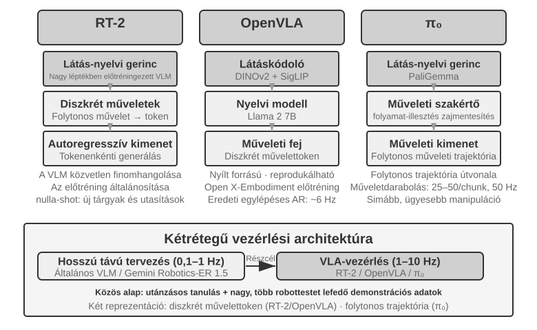
RT-2 és OpenVLA: A Diszkrét Cselekvési Token Út.
Az "RT-2" volt az úttörő ezen az úton: közvetlenül finomhangol egy nagyméretű látás-nyelvi modellt, a robot folytonos cselekvéseit tokenekké diszkretizálva, és autoregresszíven, egyenként adva ki őket, mint a szöveggenerálásnál. Kihasználja az előtanított modell általánosítási képességét a nullszoros átvitel javítására új tárgyakra és utasításokra. Az "OpenVLA" az RT-2 cselekvés-reprezentációs sémáját követi, egyesítve a nyelvi modellt és a látás kódolót egyetlen architektúrában. Képeket és szöveges utasításokat vesz bemenetként, és cselekvési tokeneket ad ki. A tanítás két szakaszban történik: először előtanítás a nagyméretű, platformokon átívelő Open X-Embodiment adatkészleten (amely több mint 20 robotplatform valós manipulációs demonstrációit fedi le) az általános manipulációs tudás megtanulására (a "megfogás" és "elhelyezés" akcióminták közösek a különböző robotoknál); másodszor, finomhangolás egy kis mennyiségű adattal egy adott platformhoz. Mivel cselekvés-reprezentációik hasonlóak, a gyakorlati különbség, amelyet itt hangsúlyoznunk kell, a nyitottságban és a mérnöki döntésekben rejlik: az RT-2 és tanítási adatai a Google belső anyagai, míg az OpenVLA teljesen nyílt forráskódú — egy nyílt forráskódú törzsmodell (Llama 2 plusz egy látás kódoló) nyilvános adatkészletekkel párosítva, így az OpenVLA verem reprodukálható és bővíthető a szélesebb közösség által.
Cselekvés Darabolás: Univerzális Frekvenciakompenzációs Technika a VLA Doménben.
Mivel a nagymodell inferencia lassú, a VLA-k sokkal alacsonyabb frekvencián futtatnak inferenciát, mint a hagyományos robotvezérlők működnek. A hagyományos vezérlés jellemzően 50-1000 Hz-en fut, míg a VLA inferencia általában csak körülbelül 1-10 Hz-en fut — egy egy-három nagyságrend közötti különbség. Az eredeti OpenVLA jól illusztrálja ezt a problémát: csak egy cselekvést ad ki inferenciánként, körülbelül 6 Hz-en, egy lépéses autoregresszív előrejelzést használva, és rángatózó mozgása az egyik legkritizáltabb hiányossága. A "Cselekvés Darabolás" egy általános technika ennek a különbségnek az áthidalására. Először az ACT (Zhao et al., 2023) javasolta, később a π₀, OpenVLA-OFT és mások átvették: a modell minden egyes inferencia során egy rövid jövőbeli cselekvéssorozatot generál egyetlen cselekvés helyett. Egy tipikus π₀ konfigurációban például a modell egy 0,5-1 másodperces darabot generál, amely 25-50 cselekvést tartalmaz 50 Hz-es vezérlési frekvencián. A vezérlő szál ezeket a cselekvéseket egymás után, nagy frekvencián hajtja végre, miközben a modell aszinkron módon, a háttérben generálja a következő adagot. Amíg az inferencia befejeződik, mielőtt az aktuális cselekvési adag végrehajtása befejeződne, a robot folyamatos, sima mozgást tud fenntartani — hasonlóan ahhoz, ahogy a videó pufferelés megakadályozza a lejátszás akadozását a tartalom előzetes betöltésével.
"π₀: A Folytonos Pályagenerálás Útja."
A valódi megosztottság a cselekvés reprezentációjában nem az RT-2 és az OpenVLA között van, hanem a "diszkrét tokenek és a folytonos pályagenerálás" között. A "π₀" az utóbbi utat követi: ahelyett, hogy diszkrét cselekvési tokeneket jósolna egyenként, flow matching-et használ, egy folytonos generálási módszert, amely a diffúziós modellekhez kapcsolódik: véletlenszerű zajjal kezd, és iteratívan "zajtalanítja" azt egy sima, folytonos cselekvési pályává. Ez a reprezentáció természetesen párosul a cselekvés darabolással, és jobban teljesít olyan feladatokon, mint az ügyes manipuláció, amelyek precíz, folyékony mozgást igényelnek. Hasonlatként: a diszkrét token megközelítés olyan, mintha parancsokat, mint "5 fok balra" és "3 cm előre", egyenként választanánk ki egy menüből. A folytonos pályagenerálás inkább olyan, mintha egy művész az egész görbét felvázolná, majd vonásról vonásra finomítaná.
Sim2Real Átvitel: A Szimuláció és Valóság Közötti Rés¶
A 6. fejezet szimulációs szakasza már elmagyarázta, honnan származik a szimuláció-valóság (sim-to-real) rés, és hogyan küzd ellene a domén randomizáció, így nem ismételjük meg itt. Röviden: a szimuláció soha nem képes tökéletesen reprodukálni a valós fizikát, vizuális elemeket és hardvert, ezért a tanítás széles tartományban randomizálja ezeket a paramétereket, kényszerítve a politikát, hogy megtanuljon egy, ezekre a változatokra robusztus reprezentációt (9-12. ábra). A következőkben azt nézzük meg, hogy ez az elv hogyan valósul meg egy valódi robotkaron.
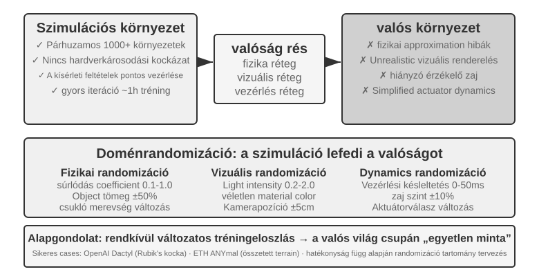
Ez a megközelítés számos figyelemre méltó sikert produkált. Az OpenAI Dactyl projektje elérte a kocka kézben történő átforgatását, és egy későbbi munka az Automatikus Domén Randomizációt (ADR) használva egy Rubik-kockát oldott meg egy kézzel. Az ETH Zürich ANYmal négylábúja robusztus járást mutatott be nehéz külső terepen, például havon és kavicson.
Amit ez a fejezet hozzáad, az a két mérnöki lépés, amelyet nem lehet kihagyni a domén randomizáció valódi robotra vitelénél. Az első a "randomizációs tartomány kalibrálása": a tartományt nem lehet tippre beállítani. Túl szűk, és kihagyja a valós változatosságot; túl széles, és a tanítás nehezebbé válik, és egy szuboptimális politikát eredményez, amely "mindent kezel, semmit sem sajátít el". A gyakorlatban a kulcsparaméterek (súrlódási együttható, motor válaszkésleltetés) eloszlását először a valós adatokból "mérik és kalibrálják", és ezen a tartományon belül mintavételeznek; ha a szimulációban tanított politika teljesítménye észrevehetően csökken a valódi roboton, a tartományt lépésről lépésre szélesítik, amíg a sim-to-real rés elfogadhatóvá nem válik. A második a "vizuális illesztés": a kamera pozíciójának pontos kalibrálása a szimuláció és a valóság között (környezeti illesztés), és valós háttérképek véletlenszerű beillesztése a szimulált renderbe (zöldvászon háttércsere), hogy a szimuláció a lehető legjobban hasonlítson arra, amit a valódi robot lát. A 9-10. kísérlet mindkét lépést bemutatja.
9-10. kísérlet ★★★: Nullszoros RGB Sim2Real Robotos Megfogás
A LeRobot + ManiSkill szimulátor használatával, csak RGB kamera képekkel tanítva (mélységérzékelők vagy erőérzékelők nélkül), majd nullszoros telepítéssel (további hangolás nélkül) közvetlenül egy valódi SO100 robotkarra. A folyamat öt lépésből áll:
- "Környezeti Illesztés": A kamera pozíciók beállítása a szimulációban és a valós környezetben, vizuális átfedéssel ellenőrizve, hogy a két oldal képei illeszkednek.
- "Háttércsere (Zöldvászon)": A valós környezetből rögzített háttérképek véletlenszerű kivágása és ráhelyezése a szimulációs renderre, így a szimulációs háttér közelebb kerül a valósághoz.
- "Domén Randomizáció": Olyan paraméterek randomizálása, mint a robot színe, a tárgy textúrája, a fényviszonyok és a kamera látómezeje.
- "RL Tanítás": Tanítás a PPO algoritmussal egy masszívan párhuzamosított szimulációs környezetben, amíg a sikerességi arány a szimulációban meghaladja a 90%-ot.
- "Valós Telepítés": A megfogási feladat sikeres elvégzése a valódi roboton, nullszoros módon.
Kulcsfontosságú sikertényezők: precíz környezeti illesztés, vizuális domén randomizáció és fizikai paraméter randomizáció; mindhárom nélkülözhetetlen. Korlát: Amikor a valódi tárgyak alakja, mérete vagy anyaga kívül esik a tanítási eloszláson, a sikerességi arány jelentősen csökken.11
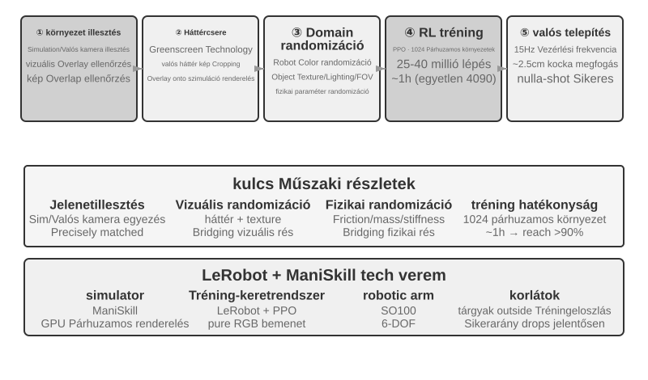
Fejezet Összefoglaló¶
A felszínen a három forgatókönyv aligha lehetne különbözőbb, mégis a késleltetés és a multimodalitás kettős akadálya mindegyiket árnyékolja. A hangügynökök a soros csővezetékektől a végponti és teljes duplex rendszerekig, valamint a különálló gyors és lassú gondolkodástól a gondolkodva beszélésig fejlődtek. A Computer Use most megközelíti az emberi pontosságot az olyan benchmarkokon, mint az OSWorld, de sokkal több lépést igényel, mint egy ember, és minden lépés tovább tart a feladat előrehaladtával — egy hatékonysági rés, amelyre még nincs szisztematikus megoldás. A vizuálisan vezérelt manipulációs feladatokat végző robotok esetében a szűk keresztmetszet a hardverről a VLA vezérlési réteg azon képességére tevődött át, hogy általánosítson a feladatok között (a tapintási érzékelés és az ügyes kezek továbbra is megoldatlan hardverkorlátok). A következő fejezet a több ügynök közötti együttműködésre tér át — egy más dimenziójú kihívásra.
Elgondolkodtató Kérdések¶
- ★★ A hangügynökök végponti modellje egyetlen modellbe olvasztja az ASR-LLM-TTS-t, csökkentve a késleltetést, de elveszítve a modularitást. Ha a végponti modell egy adott szakaszban hibázik (pl. beszédfelismerés), a hibakeresés és javítás sokkal nehezebb, mint egy soros csővezetékben. Hogyan tervezne megfigyelhetőségi rendszert egy végponti hangügynök számára?
- ★ A Step-Audio R1 az MPS kétagyú architektúrán keresztül éri el a "gondolkodva beszélést". Az emberek azonban, amikor "gondolkodva beszélnek", gyakran mondanak dolgokat, mielőtt teljesen átgondolták volna, önjavítanak, vagy töltelékszavakat használnak. Egy ügynök "gondolkodva beszélésének" utánoznia kellene ezeket az emberi jellemzőket?
- ★★ Az SoM (Set-of-Mark) és strukturált változatai (DOM elem indexálás) a Computer Use vizuális lokalizációját nyílt végű koordináta előrejelzésről zárt halmazú azonosító kiválasztásra alakítják át, de mindegyik megköveteli a felületi elemek előzetes érzékelését és annotálását — akár egy szegmentációs modellen, akár a DOM-on keresztül. Ha a felület nem szabványos vezérlőket vagy dinamikusan változó elemeket tartalmaz, az annotációk hiányosak vagy pontatlanok lehetnek. Ilyen esetben vissza kellene térnünk a koordináta előrejelzéshez?
- ★★ Az olyan ezer dolláros robotplatformok, mint az XLeRobot, olcsóvá teszik a távirányításos adatgyűjtést. Azonban a távirányításos adatok minősége nagyban függ a kezelő képzettségétől. Hogyan befolyásolná egy képzetlen kezelő alacsony minőségű adata egy VLA modell tanítását? Hogyan lehet az alacsony minőségű adatokat automatikusan kiszűrni az adatgyűjtési fázisban?
- ★★★ Ez a fejezet három interakciós modalitást fed le: hang, Computer Use és robotika. Ezekben a modalitásokban közös tendencia a soros csővezetékektől a végponti modellek felé való fejlődés. Ha ez a tendencia folytatódik, hogyan nézhet ki az ügynök interakciós rétege öt év múlva?
- ★★★ A jelenlegi Computer Use egy diszkrét "képernyőkép → cselekvés → képernyőkép" ciklusban működik, ahol minden megfigyelés egy statikus képkocka. De az emberi képernyő-észlelés folyamatos — látjuk az animációk lejátszódását, megfigyeljük a betöltési folyamatot, és megértjük a videótartalmat. Ez azt jelenti, hogy a mai Computer Use nem képes kezelni az időbeli vizuális megértést igénylő feladatokat. Hogyan tervezné újra az észlelési réteget a folyamatos vizuális streamek megértésének támogatására?
- ★★ A DOM/Accessibility Tree elemindexálás jól működik a szabványos webalkalmazásokon, de egyre több szoftverfelület (Canvas/WebGL renderelés, platformokon átívelő egyedi rajzolt vezérlők) nem biztosít hozzáférhető strukturált információt, kizárólag vizuális annotációra vagy koordináta előrejelzésre támaszkodva. Ön szerint a Computer Use-nek a tisztán vizuális megközelítésre kellene fogadnia, vagy mind a strukturált, mind a vizuális utat fenn kellene tartania? Mik a költségei és előnyei mindkét út fenntartásának?
- ★★ A VLA modellek cselekvés darabolást használnak — a szövegben említettek szerint π₀ tipikus konfigurációja 25-50 jövőbeli cselekvést generál 50 Hz-en — az inferencia késleltetésének a végrehajtási időn belüli elrejtésére. Ha azonban a környezet hirtelen megváltozik a végrehajtás alatt (pl. egy tárgyat elmozdítanak), az előre generált cselekvési sorozat érvénytelenné válik. Hogyan lehet egyensúlyt teremteni a cselekvés darabolás hatékonysági előnye és a környezeti változásokra való reagálóképesség igénye között?
- ★★★ A fejezet mindhárom forgatókönyve (hang, Computer Use, robotika) szembesül az "észlelés-gondolkodás-cselekvés" ciklus késleltetési problémájával, és a párhuzamosított gyors és lassú gondolkodás felé fejlődik. A hangban ez a "javítás a félrebeszélés után"; a Computer Use-ben a "kattints először, aztán nézz"; a robotikában a "tegyél egy lépést, aztán nézz" formában nyilvánul meg. Hogyan biztosítható, hogy ezek a gyors gondolkodáson alapuló cselekvések ne vezessenek visszafordíthatatlan következményekhez?
-
OpenAI. Introducing GPT-Live. 2026-07-08. https://openai.com/index/introducing-gpt-live/. A "Kaszkádolt / Fordulóalapú / Teljes Duplex" háromrészes osztályozás ebben a szakaszban ebből a cikkből származik, amely a ChatGPT Voice evolúciójának három generációját foglalja össze; a szövegben szereplő "Végponttól végpontig tartó Omnimmodális (Omni)" megfelel az ő "turn-based voice models" kategóriájának. ↩
-
A fordulóítélet felismerőbe ágyazásának diagnózisa és az utólagos címkék problémája megtalálható Bojie Li és Noah Shi. The Trade-off Was in the Labels: Causal Supervision for Turn-Aware Streaming ASR. 2026 (megjelenés alatt). ↩
-
A kaszkád és a végponti megoldás pontossági előnyeinek teljes keresztmodális méréséért, valamint annak előrejelzéséért, hogy az irány a feladat természetétől függ (hogy a köztes reprezentáció kellően hordozza-e a feladatinformációt), lásd Bojie Li és Noah Shi. The Cascade Gap: When and Why Self-Cascades Help Multimodal Agents. 2026 (megjelenés alatt). ↩
-
Thinking Machines Lab, "Interaction Models: A Scalable Approach to Human-AI Collaboration," 2026-05. https://thinkingmachines.ai/blog/interaction-models/ ↩
-
A két fagyasztott modell közötti latens tér híd tanításának és a "mikor érdemes lassú stratégát meghívni" teljes elemzése megtalálható Bojie Li és Noah Shi. The Latent Bridge: A Continuous Slow-Fast Channel for Real-Time Game Agents. arXiv:2606.24470, 2026. ↩↩
-
A három komponens — kapuzott kulcskockák, igény szerinti átírás, képkockák narrálása perzisztens szöveggé — teljes mechanizmusáért és modellenkénti ablációjáért lásd Bojie Li és Noah Shi. Agent-Computer Observation Interfaces Enable Dynamic Computer Use. arXiv:2606.29472, 2026. ↩
-
A beszéd-operáció gyors-lassú szétválasztásának és az "egyszerű szöveges szerződésnek" a teljes terve megtalálható Bojie Li és Noah Shi. Talking While Acting: Real-Time Voice for Slow Computer-Use Agents. 2026 (megjelenés alatt). ↩
-
XLeRobot, "Teleop Documentation." https://xlerobot.readthedocs.io/en/latest/software/getting_started/XLeRobot_teleop.html ↩
-
Google DeepMind, "Gemini Robotics-ER 1.5." https://deepmind.google/models/gemini-robotics/gemini-robotics-er/ ↩
-
XLeRobot, "LLM Agent Control." https://xlerobot.readthedocs.io/en/latest/software/getting_started/LLM_agent.html ↩
-
LeRobot, "Sim2Real Tutorial". https://github.com/StoneT2000/lerobot-sim2real/blob/main/docs/zero_shot_rgb_sim2real.md ↩